import numpy as np
import pandas as pd
import matplotlib.pyplot as plt11 NumPy for Machine Learning
A Lecture-Complete Course Script for Mathematicians
12 How to Use This Script
This document is designed as a lecture-complete course script for a mathematically trained audience. It aims to bridge rigorous mathematical thinking and practical numerical implementation.
The guiding principle of the course is:
Mathematics → vectorized formulation → NumPy implementation → numerical interpretation
The intended audience is a group of students who are comfortable with linear algebra, calculus, basic proof-oriented reasoning, and elementary Python.
The central didactic choices are the following.
- We treat NumPy as the computational language of finite-dimensional linear algebra.
- We treat pandas as a data interface rather than as the mathematical core.
- We implement fundamental machine learning models directly in NumPy before mentioning higher-level libraries.
- We repeatedly connect formulas to shapes, dimensions, and numerical stability.
13 Learning Objectives
After working through this script, students should be able to:
- use NumPy arrays as vectors, matrices, and batches of data;
- reason confidently about shapes, axes, and broadcasting;
- distinguish elementwise operations from linear-algebraic operations;
- derive and implement linear regression from first principles;
- implement gradient descent and study its convergence behavior;
- derive and implement logistic regression for binary classification;
- understand the role of feature scaling and data preprocessing;
- implement a simple neural network using matrix operations;
- recognize common sources of numerical instability and shape errors;
- connect abstract mathematics with computational workflows.
14 Course Structure
The course is organized as follows.
- NumPy as a language for vectors and matrices.
- Shapes, slicing, views, copies, and the logic of vectorization.
- Linear algebra in NumPy.
- Statistics and aggregation.
- pandas as a gateway from raw tabular data to numerical arrays.
- Linear regression and the normal equation.
- Gradient descent and optimization.
- Logistic regression and binary cross-entropy.
- Data preprocessing and feature engineering.
- A first neural network in pure NumPy.
- Numerical stability and debugging strategies.
- Mini-projects and extensions.
15 Mathematical Convention
Throughout the text:
- vectors are written in lowercase, for example \(x \in \mathbb{R}^d\);
- matrices are written in uppercase, for example \(X \in \mathbb{R}^{n \times d}\);
- rows of \(X\) usually represent samples;
- columns of \(X\) usually represent features.
Thus a dataset with \(n\) observations and \(d\) features is represented by a matrix
\[ X \in \mathbb{R}^{n \times d}. \]
A parameter vector for a linear model is usually written as
\[ w \in \mathbb{R}^d. \]
Predictions then take the form
\[ \hat y = Xw. \]
16 1. NumPy as a Computational Model of Linear Algebra
16.1 1.1 Arrays, vectors, matrices
NumPy arrays are the fundamental data structure of the course. A one-dimensional array behaves like a vector, and a two-dimensional array behaves like a matrix.
x = np.array([1.0, 2.0, 3.0])
A = np.array([
[1.0, 0.0, 2.0],
[0.0, 1.0, 1.0]
])
print("x =")
print(x)
print()
print("A =")
print(A)
print()
print("x.shape =", x.shape)
print("A.shape =", A.shape)
print("x.ndim =", x.ndim)
print("A.ndim =", A.ndim)
print("x.dtype =", x.dtype)x =
[1. 2. 3.]
A =
[[1. 0. 2.]
[0. 1. 1.]]
x.shape = (3,)
A.shape = (2, 3)
x.ndim = 1
A.ndim = 2
x.dtype = float64A first important observation is that the shape of a vector in NumPy is not (3, 1) but (3,). This is mathematically convenient in some places and dangerous in others. Much of good NumPy programming consists in keeping track of such distinctions.
16.2 1.2 Column vectors versus one-dimensional arrays
From a mathematical viewpoint, one may want to distinguish between a vector in \(\mathbb{R}^d\) and a column vector in \(\mathbb{R}^{d \times 1}\). NumPy does not force that distinction unless we create it explicitly.
x = np.array([1.0, 2.0, 3.0])
x_col = x.reshape(-1, 1)
x_row = x.reshape(1, -1)
print("x.shape =", x.shape)
print("x_col.shape =", x_col.shape)
print("x_row.shape =", x_row.shape)
print()
print("x_col =")
print(x_col)
print()
print("x_row =")
print(x_row)x.shape = (3,)
x_col.shape = (3, 1)
x_row.shape = (1, 3)
x_col =
[[1.]
[2.]
[3.]]
x_row =
[[1. 2. 3.]]This is one of the most important habits for students: always ask what the shape of each object is.
16.3 1.3 Basic arithmetic
x = np.array([1.0, -2.0, 4.0])
y = np.array([3.0, 5.0, -1.0])
print("x + y =", x + y)
print("x - y =", x - y)
print("2 * x =", 2 * x)
print("x / 2 =", x / 2)
print("x ** 2 =", x ** 2)x + y = [4. 3. 3.]
x - y = [-2. -7. 5.]
2 * x = [ 2. -4. 8.]
x / 2 = [ 0.5 -1. 2. ]
x ** 2 = [ 1. 4. 16.]These are elementwise operations. That distinction matters. Elementwise multiplication is not the same as matrix multiplication.
16.4 1.4 Inner product, norms, and basic geometry
x = np.array([1.0, -2.0, 2.0])
y = np.array([3.0, 1.0, -1.0])
inner_1 = x @ y
inner_2 = np.dot(x, y)
norm_l1 = np.sum(np.abs(x))
norm_l2 = np.sqrt(np.sum(x**2))
norm_l2_alt = np.linalg.norm(x)
norm_inf = np.max(np.abs(x))
print("inner_1 =", inner_1)
print("inner_2 =", inner_2)
print("||x||_1 =", norm_l1)
print("||x||_2 =", norm_l2)
print("||x||_2 (np.linalg.norm) =", norm_l2_alt)
print("||x||_inf =", norm_inf)inner_1 = -1.0
inner_2 = -1.0
||x||_1 = 5.0
||x||_2 = 3.0
||x||_2 (np.linalg.norm) = 3.0
||x||_inf = 2.0The formula
\[ \langle x, y \rangle = \sum_{j=1}^d x_j y_j \]
becomes either x @ y or np.dot(x, y).
The Euclidean norm
\[ \|x\|_2 = \sqrt{\langle x, x \rangle} \]
can be implemented by hand or by a library function. In a course for mathematicians it is worth showing both.
16.5 1.5 Exercise set
- Create a vector \(x \in \mathbb{R}^5\) of your choice.
- Compute \(\|x\|_1\), \(\|x\|_2\), and \(\|x\|_\infty\).
- Create another vector \(y \in \mathbb{R}^5\) and compute the inner product.
- Reshape \(x\) into a column vector and a row vector.
- Explain in words why
x.shape == (5,)is not the same asx.reshape(5, 1).shape == (5, 1).
16.6 1.6 Worked solution sketch
x = np.array([1.0, -1.0, 2.0, 0.0, 3.0])
y = np.array([2.0, 1.0, -1.0, 4.0, 0.5])
print("||x||_1 =", np.sum(np.abs(x)))
print("||x||_2 =", np.linalg.norm(x))
print("||x||_inf =", np.max(np.abs(x)))
print("<x,y> =", x @ y)
print("column shape =", x.reshape(-1, 1).shape)
print("row shape =", x.reshape(1, -1).shape)||x||_1 = 7.0
||x||_2 = 3.872983346207417
||x||_inf = 3.0
<x,y> = 0.5
column shape = (5, 1)
row shape = (1, 5)17 2. Indexing, Slicing, Views, and Copies
17.1 2.1 One-dimensional indexing
a = np.arange(10)
print("a =", a)
print("a[0] =", a[0])
print("a[3] =", a[3])
print("a[-1] =", a[-1])
print("a[2:7] =", a[2:7])
print("a[:4] =", a[:4])
print("a[::2] =", a[::2])a = [0 1 2 3 4 5 6 7 8 9]
a[0] = 0
a[3] = 3
a[-1] = 9
a[2:7] = [2 3 4 5 6]
a[:4] = [0 1 2 3]
a[::2] = [0 2 4 6 8]17.2 2.2 Two-dimensional indexing
A = np.arange(1, 13).reshape(3, 4)
print("A =")
print(A)
print()
print("A[0, 0] =", A[0, 0])
print("A[1, 2] =", A[1, 2])
print("A[:, 1] =", A[:, 1])
print("A[1, :] =", A[1, :])
print("A[:2, 1:3] =")
print(A[:2, 1:3])A =
[[ 1 2 3 4]
[ 5 6 7 8]
[ 9 10 11 12]]
A[0, 0] = 1
A[1, 2] = 7
A[:, 1] = [ 2 6 10]
A[1, :] = [5 6 7 8]
A[:2, 1:3] =
[[2 3]
[6 7]]For a matrix \(A \in \mathbb{R}^{m \times n}\), the expression A[:, j] selects the \(j\)-th column, whereas A[i, :] selects the \(i\)-th row.
17.3 2.3 Views versus copies
This topic is essential. A slice often creates a view rather than an independent object.
a = np.arange(10)
b = a[2:6]
print("Before modification")
print("a =", a)
print("b =", b)
b[0] = 99
print()
print("After modification")
print("a =", a)
print("b =", b)Before modification
a = [0 1 2 3 4 5 6 7 8 9]
b = [2 3 4 5]
After modification
a = [ 0 1 99 3 4 5 6 7 8 9]
b = [99 3 4 5]The modification of b also changed a. This means that b was a view on part of a.
To force an actual copy, use .copy().
a = np.arange(10)
c = a[2:6].copy()
c[0] = -7
print("a =", a)
print("c =", c)a = [0 1 2 3 4 5 6 7 8 9]
c = [-7 3 4 5]17.4 2.4 Boolean masks
Boolean indexing is a central tool for data preprocessing.
x = np.array([3.0, -1.0, 2.5, -4.0, 0.0, 7.0])
mask = x > 0
print("x =", x)
print("mask =", mask)
print("x[mask] =", x[mask])x = [ 3. -1. 2.5 -4. 0. 7. ]
mask = [ True False True False False True]
x[mask] = [3. 2.5 7. ]For matrices the same logic works rowwise or elementwise depending on the mask.
X = np.array([
[1.0, 10.0],
[-1.0, 20.0],
[2.0, 30.0],
[-2.0, 40.0]
])
row_mask = X[:, 0] > 0
print("row_mask =", row_mask)
print("Filtered rows =")
print(X[row_mask])row_mask = [ True False True False]
Filtered rows =
[[ 1. 10.]
[ 2. 30.]]17.5 2.5 Exercises
- Create a \(4 \times 5\) matrix and select its second row and third column.
- Create a slice of the matrix and verify whether modifying the slice changes the original matrix.
- Create a copy of the slice and verify that modifying it does not change the original matrix.
- Use boolean indexing to select all entries of a vector that are strictly larger than \(1\).
- Filter all rows of a matrix whose first component is positive.
17.6 2.6 Worked example
A = np.arange(20).reshape(4, 5)
print("A =")
print(A)
print()
print("second row =", A[1, :])
print("third column =", A[:, 2])
sub = A[:2, :3]
sub[0, 0] = -100
print()
print("A after modifying a view =")
print(A)
A = np.arange(20).reshape(4, 5)
sub_copy = A[:2, :3].copy()
sub_copy[0, 0] = -100
print()
print("A after modifying a copy =")
print(A)
print("sub_copy =")
print(sub_copy)A =
[[ 0 1 2 3 4]
[ 5 6 7 8 9]
[10 11 12 13 14]
[15 16 17 18 19]]
second row = [5 6 7 8 9]
third column = [ 2 7 12 17]
A after modifying a view =
[[-100 1 2 3 4]
[ 5 6 7 8 9]
[ 10 11 12 13 14]
[ 15 16 17 18 19]]
A after modifying a copy =
[[ 0 1 2 3 4]
[ 5 6 7 8 9]
[10 11 12 13 14]
[15 16 17 18 19]]
sub_copy =
[[-100 1 2]
[ 5 6 7]]18 3. Vectorization and Broadcasting
18.1 3.1 Why vectorization matters
In machine learning we rarely want to process one data point at a time in pure Python loops. Instead we formulate operations on full vectors and matrices.
Suppose we want to evaluate the affine function
\[ f(x) = 3x + 2 \]
at many points simultaneously.
x = np.linspace(0.0, 1.0, 6)
y = 3 * x + 2
print("x =", x)
print("y =", y)x = [0. 0.2 0.4 0.6 0.8 1. ]
y = [2. 2.6 3.2 3.8 4.4 5. ]This is both shorter and faster than a Python loop.
18.2 3.2 Loop versus vectorized formulation
x = np.linspace(0.0, 1.0, 6)
y_loop = np.empty_like(x)
for i in range(len(x)):
y_loop[i] = 3 * x[i] + 2
y_vec = 3 * x + 2
print("y_loop =", y_loop)
print("y_vec =", y_vec)
print("difference =", np.max(np.abs(y_loop - y_vec)))y_loop = [2. 2.6 3.2 3.8 4.4 5. ]
y_vec = [2. 2.6 3.2 3.8 4.4 5. ]
difference = 0.0The vectorized formulation exposes the mathematics more clearly: the expression looks like the formula itself.
18.3 3.3 Broadcasting idea
Broadcasting allows NumPy to combine arrays of compatible shape even when their shapes are not identical.
X = np.array([
[1.0, 2.0],
[3.0, 4.0],
[5.0, 6.0]
])
b = np.array([10.0, 20.0])
print("X =")
print(X)
print()
print("b =", b)
print()
print("X + b =")
print(X + b)X =
[[1. 2.]
[3. 4.]
[5. 6.]]
b = [10. 20.]
X + b =
[[11. 22.]
[13. 24.]
[15. 26.]]The vector b is broadcast across all rows.
From the machine learning viewpoint this is exactly what happens when one adds a bias vector to a batch of hidden activations or feature values.
18.4 3.4 Broadcasting with column vectors
x = np.array([1.0, 2.0, 3.0])
x_col = x[:, None]
x_row = x[None, :]
print("x_col =")
print(x_col)
print()
print("x_row =")
print(x_row)
print()
print("x_col + x_row =")
print(x_col + x_row)x_col =
[[1.]
[2.]
[3.]]
x_row =
[[1. 2. 3.]]
x_col + x_row =
[[2. 3. 4.]
[3. 4. 5.]
[4. 5. 6.]]This creates the matrix whose \((i,j)\)-entry is \(x_i + x_j\). In other words, broadcasting can be used to construct pairwise operations compactly.
18.5 3.5 A distance-matrix example
For a set of one-dimensional points \(x_1, \dots, x_n\), the matrix
\[ D_{ij} = |x_i - x_j| \]
can be built without loops.
x = np.array([0.0, 1.5, 3.0, 5.0])
D = np.abs(x[:, None] - x[None, :])
print("x =", x)
print("distance matrix =")
print(D)x = [0. 1.5 3. 5. ]
distance matrix =
[[0. 1.5 3. 5. ]
[1.5 0. 1.5 3.5]
[3. 1.5 0. 2. ]
[5. 3.5 2. 0. ]]18.6 3.6 Batch affine maps
If \(X \in \mathbb{R}^{n \times d}\) is a dataset and \(w \in \mathbb{R}^d\), then
\[ Xw \]
computes the predictions for all \(n\) points at once.
X = np.array([
[1.0, 2.0],
[0.0, 1.0],
[3.0, 1.0]
])
w = np.array([2.0, -1.0])
b = 0.5
y = X @ w + b
print("y =", y)y = [ 0.5 -0.5 5.5]This is one of the core patterns of the entire course.
18.7 3.7 Exercises
- Re-implement a simple vectorized formula using a Python loop.
- Add a vector
bto each row of a matrixX. - Construct a matrix of pairwise differences using broadcasting.
- Given a data matrix \(X\) and parameter vector \(w\), compute \(Xw + b\).
- Explain in words what broadcasting is doing in each of the examples above.
18.8 3.8 Worked example
X = np.arange(12, dtype=float).reshape(4, 3)
b = np.array([10.0, 20.0, 30.0])
print("X =")
print(X)
print()
print("X + b =")
print(X + b)
u = np.array([1.0, 4.0, 6.0, 8.0])
pairwise = u[:, None] - u[None, :]
print()
print("pairwise differences =")
print(pairwise)X =
[[ 0. 1. 2.]
[ 3. 4. 5.]
[ 6. 7. 8.]
[ 9. 10. 11.]]
X + b =
[[10. 21. 32.]
[13. 24. 35.]
[16. 27. 38.]
[19. 30. 41.]]
pairwise differences =
[[ 0. -3. -5. -7.]
[ 3. 0. -2. -4.]
[ 5. 2. 0. -2.]
[ 7. 4. 2. 0.]]19 4. Matrix Calculus in NumPy
19.1 4.1 Matrix-vector products
A = np.array([
[1.0, 2.0],
[3.0, 4.0]
])
x = np.array([1.0, -1.0])
print("A @ x =", A @ x)A @ x = [-1. -1.]The formula
\[ (Ax)_i = \sum_{j=1}^n A_{ij} x_j \]
becomes the very compact expression A @ x.
19.2 4.2 Matrix-matrix products
A = np.array([
[1.0, 2.0],
[3.0, 4.0]
])
B = np.array([
[2.0, 0.0],
[1.0, 2.0]
])
print("A @ B =")
print(A @ B)A @ B =
[[ 4. 4.]
[10. 8.]]19.3 4.3 Transposition
A = np.array([
[1.0, 2.0, 3.0],
[4.0, 5.0, 6.0]
])
print("A =")
print(A)
print()
print("A.T =")
print(A.T)A =
[[1. 2. 3.]
[4. 5. 6.]]
A.T =
[[1. 4.]
[2. 5.]
[3. 6.]]The transpose changes rows into columns. In optimization and machine learning, transposes appear everywhere: normal equations, gradients, covariance matrices, and backpropagation.
19.4 4.4 Solving linear systems
If we want to solve
\[ Ax = b, \]
then np.linalg.solve is the standard tool.
A = np.array([
[3.0, 1.0],
[1.0, 2.0]
])
b = np.array([9.0, 8.0])
x = np.linalg.solve(A, b)
print("solution x =", x)
print("A @ x =", A @ x)solution x = [2. 3.]
A @ x = [9. 8.]19.5 4.5 Why one should usually avoid explicit inverses
One often sees formulas like
\[ x = A^{-1}b. \]
This is mathematically correct when \(A\) is invertible, but numerically it is often better to solve the system directly.
A = np.array([
[3.0, 1.0],
[1.0, 2.0]
])
b = np.array([9.0, 8.0])
x_solve = np.linalg.solve(A, b)
x_inv = np.linalg.inv(A) @ b
print("x_solve =", x_solve)
print("x_inv =", x_inv)
print("difference =", np.linalg.norm(x_solve - x_inv))x_solve = [2. 3.]
x_inv = [2. 3.]
difference = 2.220446049250313e-16The differences are small here, but in more difficult problems direct solving is preferred.
19.6 4.6 Condition number
The condition number indicates how sensitive a linear system is to perturbations.
A = np.array([
[1.0, 1.0],
[1.0, 1.0001]
])
cond = np.linalg.cond(A)
print("condition number =", cond)condition number = 40002.00007491187A large condition number warns us that the problem may be numerically unstable.
19.7 4.7 Eigenvalues and singular values
Although not needed immediately, it is useful to know that NumPy also provides tools for spectral problems.
A = np.array([
[2.0, 1.0],
[1.0, 2.0]
])
eigenvalues, eigenvectors = np.linalg.eig(A)
U, S, VT = np.linalg.svd(A)
print("eigenvalues =", eigenvalues)
print("singular values =", S)eigenvalues = [3. 1.]
singular values = [3. 1.]19.8 4.8 Exercises
- Compute a matrix-vector product by hand and verify it in NumPy.
- Solve a \(2 \times 2\) linear system using
np.linalg.solve. - Compare
np.linalg.solve(A, b)withnp.linalg.inv(A) @ b. - Construct an ill-conditioned matrix and compute its condition number.
- Compute the eigenvalues of a symmetric matrix and interpret them geometrically.
19.9 4.9 Worked example
A = np.array([
[4.0, 1.0],
[1.0, 3.0]
])
b = np.array([1.0, 2.0])
x = np.linalg.solve(A, b)
print("x =", x)
print("residual =", np.linalg.norm(A @ x - b))
eigvals, eigvecs = np.linalg.eig(A)
print("eigvals =", eigvals)
print("eigvecs =")
print(eigvecs)x = [0.09090909 0.63636364]
residual = 0.0
eigvals = [4.61803399 2.38196601]
eigvecs =
[[ 0.85065081 -0.52573111]
[ 0.52573111 0.85065081]]20 5. Aggregation, Statistics, and the axis Parameter
20.1 5.1 Means and sums
Statistics is everywhere in machine learning: means, variances, losses, empirical risks, and error metrics.
data = np.array([
[1.0, 2.0, 3.0],
[2.0, 3.0, 4.0],
[3.0, 4.0, 5.0]
])
print("sum over all entries =", np.sum(data))
print("mean over all entries =", np.mean(data))sum over all entries = 27.0
mean over all entries = 3.020.2 5.2 Means along an axis
print("column means =", np.mean(data, axis=0))
print("row means =", np.mean(data, axis=1))column means = [2. 3. 4.]
row means = [2. 3. 4.]The meaning of axis is worth internalizing.
axis=0means aggregate down the rows, so the result keeps one entry per column.axis=1means aggregate across the columns, so the result keeps one entry per row.
20.3 5.3 Variance and standard deviation
print("column variances =", np.var(data, axis=0))
print("column std =", np.std(data, axis=0))column variances = [0.66666667 0.66666667 0.66666667]
column std = [0.81649658 0.81649658 0.81649658]In practical machine learning, these are central for normalization and data exploration.
20.4 5.4 Standardization
Given a feature matrix \(X\), one often transforms each column by
\[ \widetilde X_{:,j} = \frac{X_{:,j} - \mu_j}{\sigma_j}. \]
X = np.array([
[1.0, 10.0],
[2.0, 20.0],
[3.0, 30.0],
[4.0, 40.0]
])
mu = np.mean(X, axis=0)
sigma = np.std(X, axis=0)
X_std = (X - mu) / sigma
print("mu =", mu)
print("sigma =", sigma)
print("X_std =")
print(X_std)
print("mean of standardized columns =", np.mean(X_std, axis=0))
print("std of standardized columns =", np.std(X_std, axis=0))mu = [ 2.5 25. ]
sigma = [ 1.11803399 11.18033989]
X_std =
[[-1.34164079 -1.34164079]
[-0.4472136 -0.4472136 ]
[ 0.4472136 0.4472136 ]
[ 1.34164079 1.34164079]]
mean of standardized columns = [0. 0.]
std of standardized columns = [1. 1.]20.5 5.5 Loss functions as aggregations
For regression, the mean squared error is
\[ \mathrm{MSE}(y, \hat y) = \frac{1}{n}\sum_{i=1}^n (y_i - \hat y_i)^2. \]
y = np.array([2.0, 3.0, 5.0, 4.0])
y_pred = np.array([2.2, 2.8, 4.7, 4.3])
mse = np.mean((y - y_pred)**2)
mae = np.mean(np.abs(y - y_pred))
print("MSE =", mse)
print("MAE =", mae)MSE = 0.06499999999999999
MAE = 0.2520.6 5.6 Exercises
- Compute the row sums and column sums of a matrix.
- Standardize a small matrix and verify the result numerically.
- Implement the mean squared error by hand.
- Compare MSE and MAE on the same prediction vector.
- Explain why standardization is done featurewise rather than over all entries at once.
20.7 5.7 Worked example
X = np.array([
[2.0, 1.0, 3.0],
[4.0, 2.0, 6.0],
[6.0, 3.0, 9.0]
])
print("column sums =", np.sum(X, axis=0))
print("row sums =", np.sum(X, axis=1))
mu = np.mean(X, axis=0)
sigma = np.std(X, axis=0)
Z = (X - mu) / sigma
print("Z =")
print(Z)
print("column means of Z =", np.mean(Z, axis=0))
print("column std of Z =", np.std(Z, axis=0))column sums = [12. 6. 18.]
row sums = [ 6. 12. 18.]
Z =
[[-1.22474487 -1.22474487 -1.22474487]
[ 0. 0. 0. ]
[ 1.22474487 1.22474487 1.22474487]]
column means of Z = [0. 0. 0.]
column std of Z = [1. 1. 1.]21 6. Randomness, Reproducibility, and Synthetic Data
21.1 6.1 Why randomness matters
Randomness enters machine learning in many places:
- synthetic data generation;
- random initialization of parameters;
- train-test splitting;
- mini-batch sampling;
- randomized algorithms.
21.2 6.2 Modern random number generation
The recommended interface is np.random.default_rng.
rng = np.random.default_rng(42)
print("uniform random numbers =", rng.random(5))
print("normal random numbers =", rng.standard_normal(5))
print("random integers =", rng.integers(0, 10, size=5))uniform random numbers = [0.77395605 0.43887844 0.85859792 0.69736803 0.09417735]
normal random numbers = [-1.30217951 0.1278404 -0.31624259 -0.01680116 -0.85304393]
random integers = [5 3 1 9 7]21.3 6.3 Reproducibility
rng1 = np.random.default_rng(123)
rng2 = np.random.default_rng(123)
print(rng1.standard_normal(4))
print(rng2.standard_normal(4))[-0.98912135 -0.36778665 1.28792526 0.19397442]
[-0.98912135 -0.36778665 1.28792526 0.19397442]The outputs agree because the seeds agree.
21.4 6.4 A synthetic linear regression dataset
rng = np.random.default_rng(0)
n = 100
x = np.linspace(0.0, 10.0, n)
noise = rng.normal(0.0, 1.0, size=n)
y = 2.5 * x - 1.0 + noise
plt.figure(figsize=(6, 4))
plt.scatter(x, y, s=20)
plt.xlabel("x")
plt.ylabel("y")
plt.title("Synthetic linear regression data")
plt.show()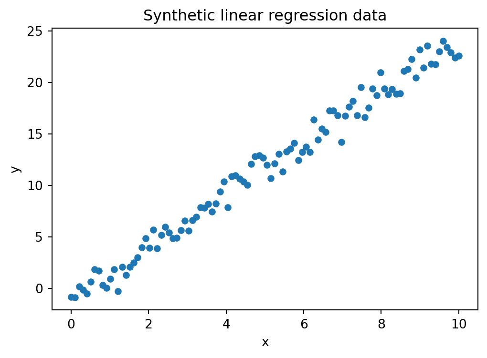
21.5 6.5 A synthetic classification dataset
rng = np.random.default_rng(0)
n0 = 80
n1 = 80
X0 = rng.normal(loc=[-1.0, -1.0], scale=0.8, size=(n0, 2))
X1 = rng.normal(loc=[1.0, 1.0], scale=0.8, size=(n1, 2))
X = np.vstack([X0, X1])
y = np.concatenate([np.zeros(n0), np.ones(n1)])
plt.figure(figsize=(6, 4))
plt.scatter(X0[:, 0], X0[:, 1], label="class 0", s=20)
plt.scatter(X1[:, 0], X1[:, 1], label="class 1", s=20)
plt.legend()
plt.xlabel("x1")
plt.ylabel("x2")
plt.title("Synthetic binary classification data")
plt.show()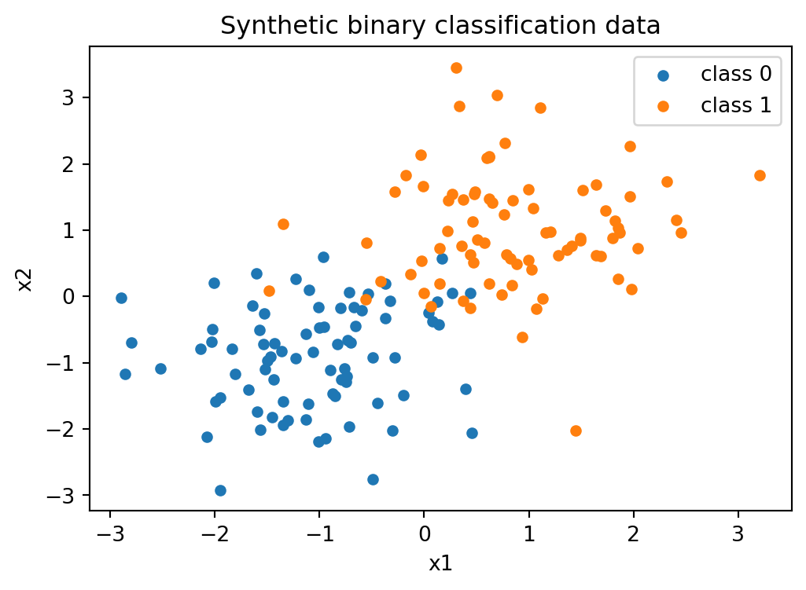
21.6 6.6 Train-test splitting by permutation
rng = np.random.default_rng(7)
n = len(X)
perm = rng.permutation(n)
train_size = int(0.8 * n)
train_idx = perm[:train_size]
test_idx = perm[train_size:]
X_train = X[train_idx]
X_test = X[test_idx]
y_train = y[train_idx]
y_test = y[test_idx]
print("X_train.shape =", X_train.shape)
print("X_test.shape =", X_test.shape)X_train.shape = (128, 2)
X_test.shape = (32, 2)21.7 6.7 Exercises
- Generate a random vector with a fixed seed and verify reproducibility.
- Create a synthetic regression dataset with noise.
- Create a synthetic binary classification dataset in two dimensions.
- Split a dataset into train and test subsets using a permutation.
- Explain why fixed seeds are useful in teaching and experimentation.
21.8 6.8 Worked example
rng = np.random.default_rng(2024)
X = rng.normal(size=(12, 3))
y = (X[:, 0] - X[:, 1] > 0).astype(int)
perm = rng.permutation(len(X))
split = 8
X_train = X[perm[:split]]
X_test = X[perm[split:]]
y_train = y[perm[:split]]
y_test = y[perm[split:]]
print("y_train =", y_train)
print("y_test =", y_test)y_train = [1 0 1 1 1 0 0 0]
y_test = [0 1 0 1]22 7. pandas as a Data Interface
22.1 7.1 Why pandas belongs after NumPy
For mathematically trained students it is usually more effective to learn NumPy first. Once arrays, shapes, and matrix operations are conceptually clear, pandas can be introduced as an interface for real-world tabular data.
The key pedagogical message is:
pandas handles labeled tabular data; NumPy performs the mathematical core.
22.2 7.2 A small example DataFrame
df = pd.DataFrame({
"age": [22, 27, 31, 45, 38, 29],
"income": [42000, 51000, 64000, 83000, 72000, 56000],
"hours_studied": [10, 12, 7, 4, 6, 9],
"passed": [1, 1, 0, 0, 1, 1]
})
df| age | income | hours_studied | passed | |
|---|---|---|---|---|
| 0 | 22 | 42000 | 10 | 1 |
| 1 | 27 | 51000 | 12 | 1 |
| 2 | 31 | 64000 | 7 | 0 |
| 3 | 45 | 83000 | 4 | 0 |
| 4 | 38 | 72000 | 6 | 1 |
| 5 | 29 | 56000 | 9 | 1 |
A DataFrame can be viewed as a matrix together with labels and heterogeneous metadata.
22.3 7.3 Selecting columns and rows
print(df["age"])
print()
print(df[["age", "income"]])
print()
print(df.iloc[0])
print()
print(df.loc[0:2, ["age", "passed"]])0 22
1 27
2 31
3 45
4 38
5 29
Name: age, dtype: int64
age income
0 22 42000
1 27 51000
2 31 64000
3 45 83000
4 38 72000
5 29 56000
age 22
income 42000
hours_studied 10
passed 1
Name: 0, dtype: int64
age passed
0 22 1
1 27 1
2 31 022.4 7.4 Filtering rows
filtered = df[df["income"] > 55000]
filtered| age | income | hours_studied | passed | |
|---|---|---|---|---|
| 2 | 31 | 64000 | 7 | 0 |
| 3 | 45 | 83000 | 4 | 0 |
| 4 | 38 | 72000 | 6 | 1 |
| 5 | 29 | 56000 | 9 | 1 |
22.5 7.5 Missing values
df_missing = df.copy()
df_missing.loc[2, "income"] = np.nan
df_missing.loc[4, "hours_studied"] = np.nan
print(df_missing)
print()
print(df_missing.isna())
print()
print(df_missing.dropna()) age income hours_studied passed
0 22 42000.0 10.0 1
1 27 51000.0 12.0 1
2 31 NaN 7.0 0
3 45 83000.0 4.0 0
4 38 72000.0 NaN 1
5 29 56000.0 9.0 1
age income hours_studied passed
0 False False False False
1 False False False False
2 False True False False
3 False False False False
4 False False True False
5 False False False False
age income hours_studied passed
0 22 42000.0 10.0 1
1 27 51000.0 12.0 1
3 45 83000.0 4.0 0
5 29 56000.0 9.0 122.6 7.6 From pandas to NumPy
This is the crucial transition.
clean = df_missing.dropna()
X = clean[["age", "income", "hours_studied"]].to_numpy(dtype=float)
y = clean["passed"].to_numpy(dtype=float)
print("X =")
print(X)
print()
print("y =", y)
print("X.shape =", X.shape)
print("y.shape =", y.shape)X =
[[2.2e+01 4.2e+04 1.0e+01]
[2.7e+01 5.1e+04 1.2e+01]
[4.5e+01 8.3e+04 4.0e+00]
[2.9e+01 5.6e+04 9.0e+00]]
y = [1. 1. 0. 1.]
X.shape = (4, 3)
y.shape = (4,)Once we reach X and y, we are back in the mathematical world of arrays.
22.7 7.7 Reading a CSV file
The next cell assumes that a file named ml_dataset.csv is available in the same directory. If that file is not present, the fallback code creates a simple example dataset instead.
from pathlib import Path
csv_path = Path("ml_dataset.csv")
if csv_path.exists():
df_csv = pd.read_csv(csv_path)
else:
rng = np.random.default_rng(42)
n = 120
df_csv = pd.DataFrame({
"age": rng.integers(18, 65, size=n),
"income": rng.normal(55000, 14000, size=n),
"hours_studied": rng.normal(8, 2, size=n),
})
logits = (
-4
+ 0.00005 * df_csv["income"]
+ 0.25 * df_csv["hours_studied"]
- 0.02 * df_csv["age"]
)
probs = 1 / (1 + np.exp(-logits))
df_csv["target"] = (rng.random(n) < probs).astype(int)
df_csv.head()| age | income | hours_studied | target | |
|---|---|---|---|---|
| 0 | 22 | 42878.364380 | 7.762723 | 0 |
| 1 | 54 | 68555.896964 | 8.571652 | 1 |
| 2 | 48 | 31439.823197 | 10.612003 | 1 |
| 3 | 38 | 50311.609580 | 8.438765 | 1 |
| 4 | 38 | 57278.542911 | 7.178146 | 1 |
22.8 7.8 Basic exploratory analysis
print(df_csv.describe())
print()
print(df_csv.dtypes) age income hours_studied target
count 120.00000 120.000000 120.000000 120.000000
mean 41.95000 53343.380771 7.991499 0.458333
std 12.83499 12735.834218 2.016080 0.500350
min 18.00000 25151.352070 2.866683 0.000000
25% 31.00000 43345.030963 6.670809 0.000000
50% 42.00000 52550.425867 7.808451 0.000000
75% 54.00000 61287.290680 8.879359 1.000000
max 63.00000 95794.074524 13.810134 1.000000
age int64
income float64
hours_studied float64
target int64
dtype: objectnumeric_cols = [c for c in df_csv.columns if pd.api.types.is_numeric_dtype(df_csv[c])]
df_csv[numeric_cols].hist(figsize=(10, 6))
plt.suptitle("Histograms of numeric columns")
plt.tight_layout()
plt.show()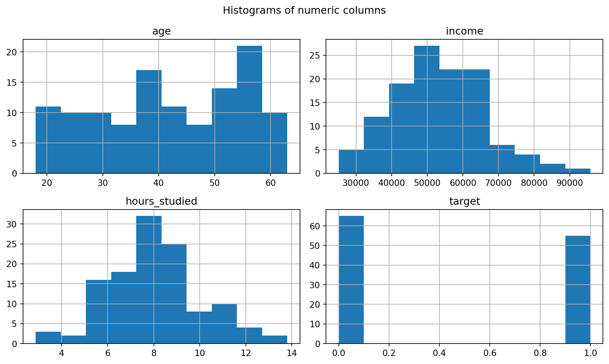
22.9 7.9 Exercises
- Create a DataFrame with at least three columns and six rows.
- Select two columns and convert them to a NumPy array.
- Introduce missing values and remove them.
- Filter a DataFrame by a threshold condition.
- Explain the sentence “pandas is the interface, NumPy is the engine.”
22.10 7.10 Worked example
df_small = pd.DataFrame({
"feature_1": [1.0, 2.0, 3.0, 4.0],
"feature_2": [10.0, 20.0, 30.0, 40.0],
"label": [0, 1, 0, 1]
})
X = df_small[["feature_1", "feature_2"]].to_numpy()
y = df_small["label"].to_numpy()
print("X =")
print(X)
print("y =", y)X =
[[ 1. 10.]
[ 2. 20.]
[ 3. 30.]
[ 4. 40.]]
y = [0 1 0 1]23 8. Linear Regression from First Principles
23.1 8.1 Problem statement
Suppose we are given data
\[ (x_i, y_i) \in \mathbb{R}^d \times \mathbb{R}, \quad i = 1, \dots, n. \]
We collect the inputs as rows of a matrix
\[ X \in \mathbb{R}^{n \times d} \]
and the outputs as a vector
\[ y \in \mathbb{R}^n. \]
A linear model predicts
\[ \hat y = Xw. \]
The least squares objective is
\[ f(w) = \|Xw - y\|_2^2. \]
Our goal is to find
\[ w^\ast = \arg\min_{w \in \mathbb{R}^d} \|Xw - y\|_2^2. \]
23.2 8.2 Derivation of the normal equation
Expanding the square gives
\[ f(w) = (Xw - y)^\top (Xw - y). \]
Differentiating with respect to \(w\) yields
\[ \nabla f(w) = 2X^\top(Xw - y). \]
At a critical point we therefore require
\[ X^\top(Xw - y) = 0, \]
hence
\[ X^\top X w = X^\top y. \]
This is the normal equation.
If \(X^\top X\) is invertible, the minimizer is
\[ w^\ast = (X^\top X)^{-1} X^\top y. \]
Computationally, we prefer the solve form
\[ w^\ast = \mathrm{solve}(X^\top X,\; X^\top y). \]
23.3 8.3 A small one-dimensional example
X_raw = np.array([1.0, 2.0, 3.0, 4.0, 5.0])
y = np.array([1.8, 2.9, 3.7, 5.1, 5.9])
X = np.column_stack([np.ones(len(X_raw)), X_raw])
print("X =")
print(X)
print("y =", y)X =
[[1. 1.]
[1. 2.]
[1. 3.]
[1. 4.]
[1. 5.]]
y = [1.8 2.9 3.7 5.1 5.9]The first column of ones corresponds to the intercept term.
23.4 8.4 Solving the normal equation
w = np.linalg.solve(X.T @ X, X.T @ y)
print("w =", w)w = [0.76 1.04]23.5 8.5 Predictions and residuals
y_pred = X @ w
residuals = y - y_pred
print("predictions =", y_pred)
print("residuals =", residuals)
print("MSE =", np.mean(residuals**2))predictions = [1.8 2.84 3.88 4.92 5.96]
residuals = [-2.22044605e-16 6.00000000e-02 -1.80000000e-01 1.80000000e-01
-6.00000000e-02]
MSE = 0.01439999999999991823.6 8.6 Visualization
plt.figure(figsize=(6, 4))
plt.scatter(X_raw, y, label="data")
plt.plot(X_raw, y_pred, label="least squares fit")
plt.xlabel("x")
plt.ylabel("y")
plt.legend()
plt.title("Linear regression fit")
plt.show()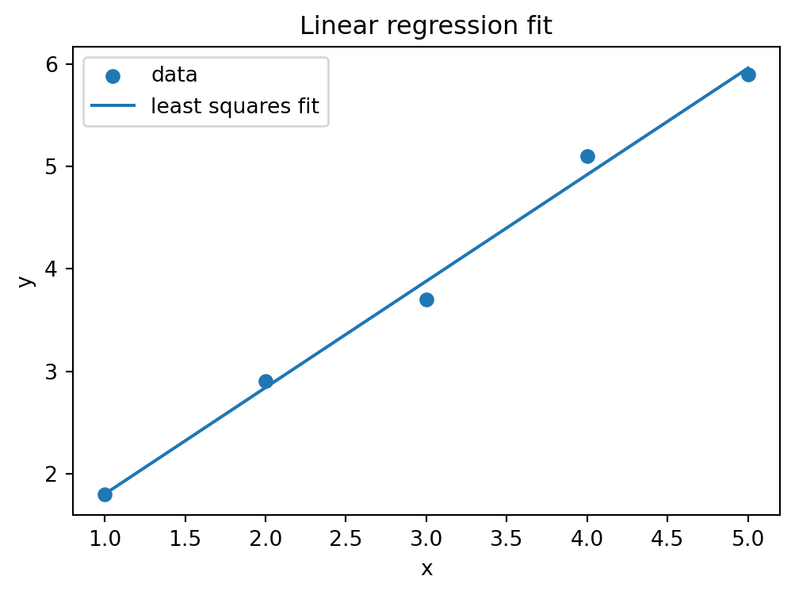
23.7 8.7 Geometric interpretation
The normal equation
\[ X^\top(Xw^\ast - y)=0 \]
says that the residual vector \(r = y - Xw^\ast\) is orthogonal to the column space of \(X\). Thus \(Xw^\ast\) is the orthogonal projection of \(y\) onto the column space of \(X\).
This is one of the deepest conceptual points in the course. Least squares is not merely an algorithm; it is an orthogonal projection problem.
23.8 8.8 A synthetic multi-feature example
rng = np.random.default_rng(0)
n = 200
d = 3
X_features = rng.normal(size=(n, d))
true_w = np.array([1.5, -2.0, 0.75])
noise = 0.3 * rng.standard_normal(n)
y = X_features @ true_w + noise
X = X_features
w_hat = np.linalg.solve(X.T @ X, X.T @ y)
print("true_w =", true_w)
print("w_hat =", w_hat)
print("estimation error =", np.linalg.norm(w_hat - true_w))true_w = [ 1.5 -2. 0.75]
w_hat = [ 1.47371393 -2.02925259 0.76647239]
estimation error = 0.0426381476772730523.9 8.9 Regression with an explicit intercept
X_aug = np.column_stack([np.ones(n), X_features])
w_aug = np.linalg.solve(X_aug.T @ X_aug, X_aug.T @ y)
print("w_aug =", w_aug)w_aug = [-0.01084165 1.47300522 -2.02884578 0.76590767]The first component is the intercept.
23.10 8.10 Exercises
- Derive the normal equation carefully starting from \(f(w)=\|Xw-y\|_2^2\).
- Implement least squares on a small one-dimensional dataset.
- Add noise to the outputs and observe how the solution changes.
- Compare the true coefficient vector to the estimated one on synthetic data.
- Explain the projection interpretation in your own words.
23.11 8.11 Worked solution example
rng = np.random.default_rng(5)
n = 80
x = np.linspace(-2, 2, n)
y = 1.2 + 2.7 * x + 0.5 * rng.standard_normal(n)
X = np.column_stack([np.ones(n), x])
w = np.linalg.solve(X.T @ X, X.T @ y)
y_pred = X @ w
print("estimated parameters =", w)
print("MSE =", np.mean((y - y_pred)**2))
plt.figure(figsize=(6, 4))
plt.scatter(x, y, s=18)
plt.plot(x, y_pred)
plt.title("Worked least squares example")
plt.show()estimated parameters = [1.11582782 2.73530772]
MSE = 0.20363506927607586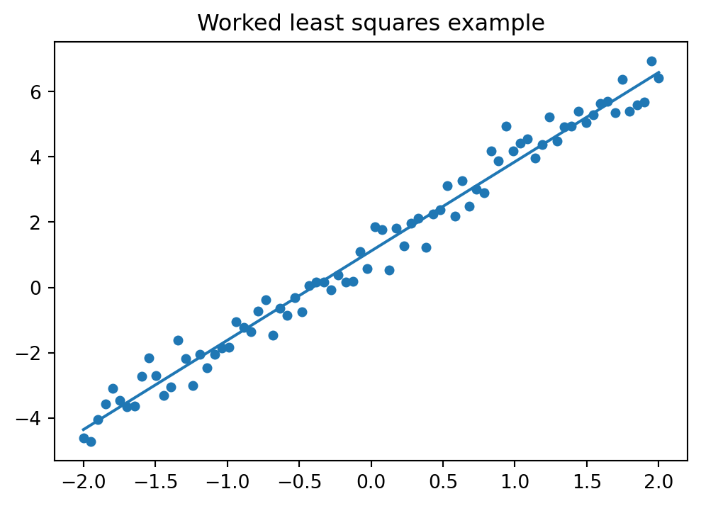
24 9. Gradient Descent for Least Squares
24.1 9.1 Why gradient descent?
The normal equation is elegant, but direct linear solves are not the only way to optimize an objective. Machine learning often relies on iterative optimization.
For least squares we consider the empirical risk
\[ f(w) = \frac{1}{n}\|Xw - y\|_2^2. \]
Its gradient is
\[ \nabla f(w) = \frac{2}{n}X^\top(Xw - y). \]
The gradient descent iteration is
\[ w_{k+1} = w_k - \eta \nabla f(w_k), \]
where \(\eta > 0\) is the learning rate.
24.2 9.2 Implementation
rng = np.random.default_rng(0)
n = 120
d = 2
X = rng.normal(size=(n, d))
true_w = np.array([2.0, -1.0])
y = X @ true_w + 0.2 * rng.standard_normal(n)
w = np.zeros(d)
eta = 0.1
num_steps = 200
loss_history = []
for _ in range(num_steps):
grad = (2 / n) * X.T @ (X @ w - y)
w = w - eta * grad
loss = np.mean((X @ w - y)**2)
loss_history.append(loss)
print("estimated w =", w)
print("true_w =", true_w)
print("final loss =", loss_history[-1])estimated w = [ 1.99927294 -1.03094039]
true_w = [ 2. -1.]
final loss = 0.03956315121358463424.3 9.3 Convergence plot
plt.figure(figsize=(6, 4))
plt.plot(loss_history)
plt.xlabel("iteration")
plt.ylabel("MSE")
plt.title("Gradient descent convergence")
plt.show()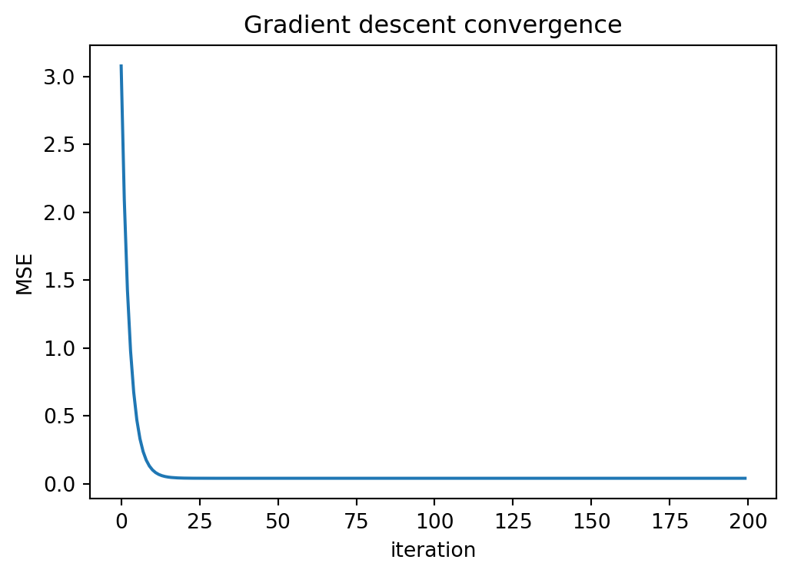
24.4 9.4 Comparison with closed-form least squares
w_closed = np.linalg.solve(X.T @ X, X.T @ y)
print("w_closed =", w_closed)
print("w_gd =", w)
print("difference =", np.linalg.norm(w_closed - w))w_closed = [ 1.99927294 -1.03094039]
w_gd = [ 1.99927294 -1.03094039]
difference = 9.42055475210265e-1624.5 9.5 Learning rate effects
The choice of learning rate matters.
etas = [0.01, 0.05, 0.2]
histories = []
for eta in etas:
w_eta = np.zeros(d)
hist = []
for _ in range(100):
grad = (2 / n) * X.T @ (X @ w_eta - y)
w_eta -= eta * grad
hist.append(np.mean((X @ w_eta - y)**2))
histories.append(hist)
plt.figure(figsize=(6, 4))
for eta, hist in zip(etas, histories):
plt.plot(hist, label=f"eta={eta}")
plt.legend()
plt.xlabel("iteration")
plt.ylabel("MSE")
plt.title("Effect of the learning rate")
plt.show()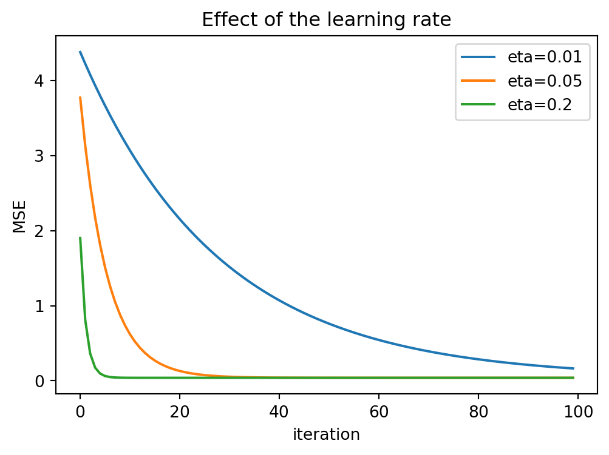
24.6 9.6 Gradient checking idea
A very useful debugging principle is to compare an analytic gradient with a finite-difference approximation.
For a scalar function \(f:\mathbb{R}^d \to \mathbb{R}\) and a small perturbation \(h\), one can compare
\[ \frac{f(w + h e_j) - f(w - h e_j)}{2h} \]
to the \(j\)-th component of the analytic gradient.
def least_squares_loss(w, X, y):
return np.mean((X @ w - y)**2)
def least_squares_grad(w, X, y):
n = len(y)
return (2 / n) * X.T @ (X @ w - y)
w0 = np.array([0.3, -0.2])
g = least_squares_grad(w0, X, y)
h = 1e-6
g_fd = np.zeros_like(w0)
for j in range(len(w0)):
e = np.zeros_like(w0)
e[j] = 1.0
g_fd[j] = (
least_squares_loss(w0 + h * e, X, y)
- least_squares_loss(w0 - h * e, X, y)
) / (2 * h)
print("analytic grad =", g)
print("finite diff grad =", g_fd)
print("difference =", np.linalg.norm(g - g_fd))analytic grad = [-3.12182606 1.2955987 ]
finite diff grad = [-3.12182606 1.2955987 ]
difference = 1.9233228267753716e-1024.7 9.7 Exercises
- Derive the gradient of the least squares loss.
- Implement gradient descent for a synthetic regression problem.
- Compare the result to the normal equation solution.
- Experiment with too-small and too-large learning rates.
- Use a finite-difference test to validate your gradient formula.
24.8 9.8 Worked example
rng = np.random.default_rng(11)
n = 150
d = 3
X = rng.normal(size=(n, d))
w_true = np.array([1.0, -1.5, 0.5])
y = X @ w_true + 0.1 * rng.normal(size=n)
w = np.zeros(d)
eta = 0.08
losses = []
for _ in range(300):
grad = (2 / n) * X.T @ (X @ w - y)
w -= eta * grad
losses.append(np.mean((X @ w - y)**2))
print("w_true =", w_true)
print("w =", w)
plt.figure(figsize=(6, 4))
plt.plot(losses)
plt.title("Worked gradient descent example")
plt.xlabel("iteration")
plt.ylabel("MSE")
plt.show()w_true = [ 1. -1.5 0.5]
w = [ 0.9990376 -1.49071693 0.49701198]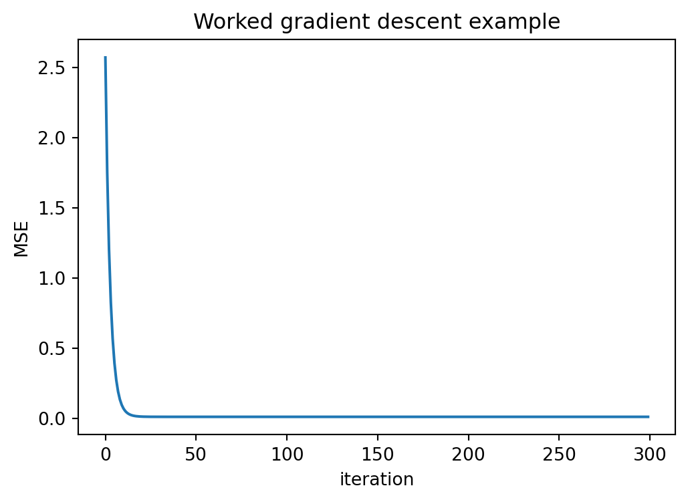
25 10. Binary Classification and Logistic Regression
25.1 10.1 Why linear regression is not enough for classification
If the target values are \(0\) and \(1\), then least squares can still be used, but it does not model probabilities naturally and can produce values outside the interval \([0,1]\).
To model probabilities we use the sigmoid function
\[ \sigma(t) = \frac{1}{1 + e^{-t}}. \]
25.2 10.2 The sigmoid function
def sigmoid(t):
return 1 / (1 + np.exp(-t))
t = np.linspace(-8, 8, 400)
plt.figure(figsize=(6, 4))
plt.plot(t, sigmoid(t))
plt.xlabel("t")
plt.ylabel("sigma(t)")
plt.title("Sigmoid function")
plt.show()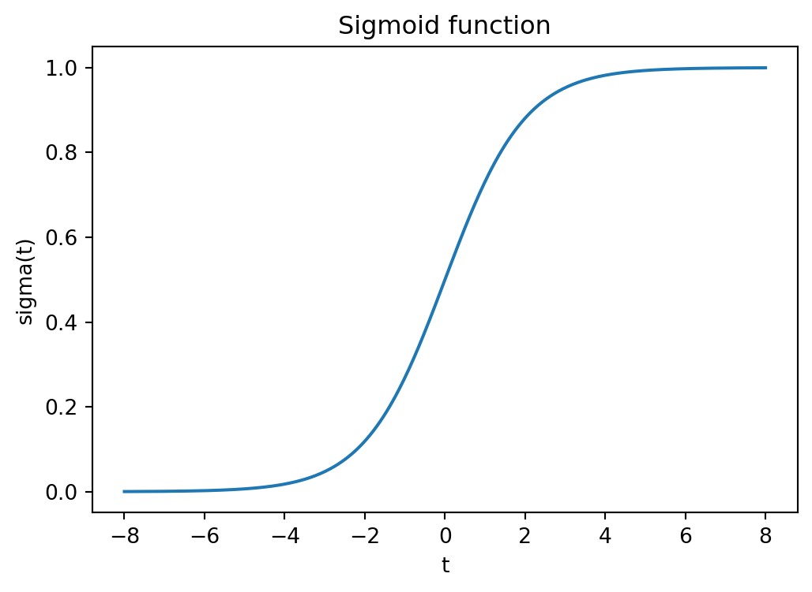
25.3 10.3 Logistic model
Given \(x \in \mathbb{R}^d\) and parameter vector \(w \in \mathbb{R}^d\), the logistic model is
\[ p(y=1 \mid x) = \sigma(x^\top w). \]
For a full dataset with design matrix \(X\), the vector of predicted probabilities is
\[ p = \sigma(Xw), \]
where the sigmoid is applied componentwise.
25.4 10.4 Binary cross-entropy loss
If \(y_i \in \{0,1\}\) and \(p_i\) is the predicted probability of class \(1\), the average logistic loss is
\[ L(w) = -\frac{1}{n}\sum_{i=1}^n \left( y_i \log p_i + (1-y_i)\log(1-p_i) \right). \]
This is also called binary cross-entropy.
25.5 10.5 Gradient of the logistic loss
A standard calculation shows that
\[ \nabla L(w) = \frac{1}{n} X^\top (p - y), \]
where
\[ p = \sigma(Xw). \]
This compact formula is one of the main reasons logistic regression is such an elegant teaching example.
25.6 10.6 Synthetic dataset
rng = np.random.default_rng(0)
n0 = 120
n1 = 120
X0 = rng.normal(loc=[-1.5, -1.0], scale=0.9, size=(n0, 2))
X1 = rng.normal(loc=[1.0, 1.3], scale=0.9, size=(n1, 2))
X_raw = np.vstack([X0, X1])
y = np.concatenate([np.zeros(n0), np.ones(n1)])
plt.figure(figsize=(6, 4))
plt.scatter(X0[:, 0], X0[:, 1], s=18, label="class 0")
plt.scatter(X1[:, 0], X1[:, 1], s=18, label="class 1")
plt.legend()
plt.xlabel("x1")
plt.ylabel("x2")
plt.title("Binary classification dataset")
plt.show()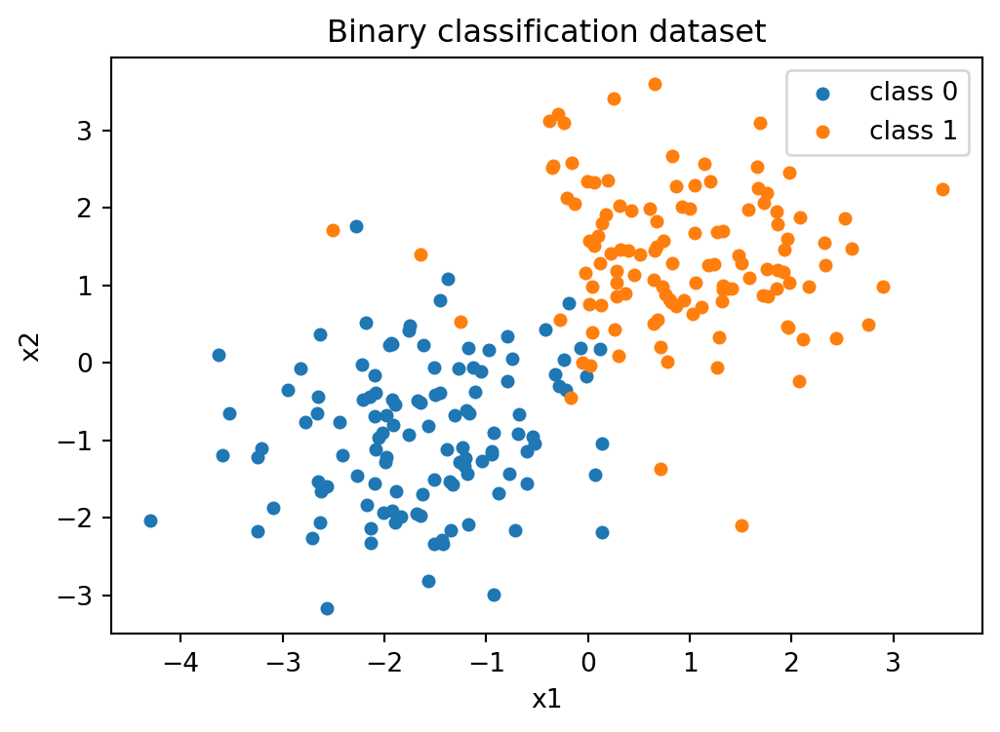
25.7 10.7 Add the intercept column
X = np.column_stack([np.ones(len(X_raw)), X_raw])
print("X.shape =", X.shape)
print("y.shape =", y.shape)X.shape = (240, 3)
y.shape = (240,)25.8 10.8 Binary cross-entropy implementation
def binary_cross_entropy(y_true, y_prob):
eps = 1e-12
y_prob = np.clip(y_prob, eps, 1 - eps)
return -np.mean(
y_true * np.log(y_prob)
+ (1 - y_true) * np.log(1 - y_prob)
)25.9 10.9 Gradient descent for logistic regression
n, d = X.shape
w = np.zeros(d)
eta = 0.2
num_steps = 1000
history = []
for _ in range(num_steps):
p = sigmoid(X @ w)
grad = (X.T @ (p - y)) / n
w -= eta * grad
history.append(binary_cross_entropy(y, p))
print("w =", w)
print("final loss =", history[-1])w = [0.40651878 2.72978342 2.35158575]
final loss = 0.0914176695295885725.10 10.10 Loss curve
plt.figure(figsize=(6, 4))
plt.plot(history)
plt.xlabel("iteration")
plt.ylabel("binary cross-entropy")
plt.title("Logistic regression training curve")
plt.show()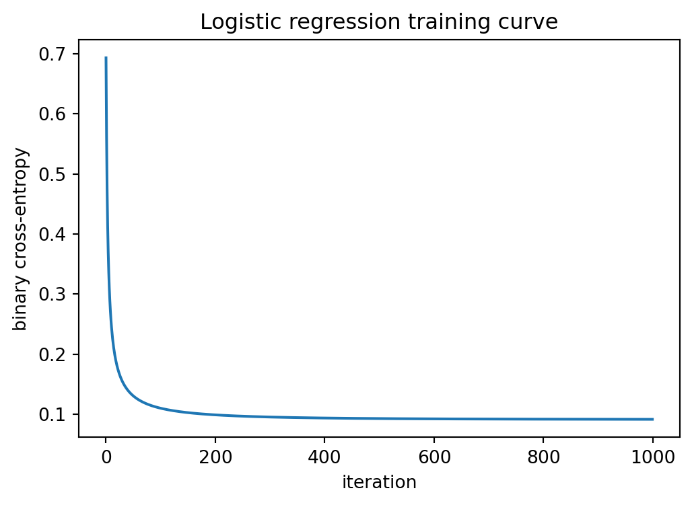
25.11 10.11 Classification accuracy
p = sigmoid(X @ w)
y_pred = (p >= 0.5).astype(int)
accuracy = np.mean(y_pred == y)
print("accuracy =", accuracy)accuracy = 0.958333333333333425.12 10.12 Decision boundary visualization
For a model
\[ p(y=1 \mid x) = \sigma(w_0 + w_1 x_1 + w_2 x_2), \]
the decision boundary at threshold \(0.5\) is
\[ w_0 + w_1 x_1 + w_2 x_2 = 0. \]
plt.figure(figsize=(6, 4))
plt.scatter(X0[:, 0], X0[:, 1], s=18, label="class 0")
plt.scatter(X1[:, 0], X1[:, 1], s=18, label="class 1")
x1_min, x1_max = X_raw[:, 0].min() - 1, X_raw[:, 0].max() + 1
grid_x1 = np.linspace(x1_min, x1_max, 200)
if abs(w[2]) > 1e-12:
grid_x2 = -(w[0] + w[1] * grid_x1) / w[2]
plt.plot(grid_x1, grid_x2, label="decision boundary")
plt.xlabel("x1")
plt.ylabel("x2")
plt.legend()
plt.title("Logistic regression decision boundary")
plt.show()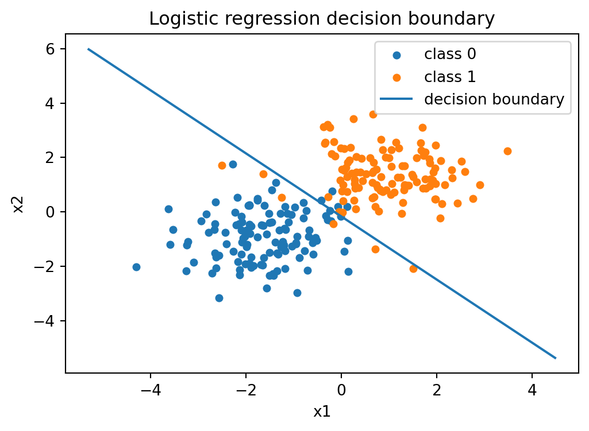
25.13 10.13 Confusion counts
tp = np.sum((y_pred == 1) & (y == 1))
tn = np.sum((y_pred == 0) & (y == 0))
fp = np.sum((y_pred == 1) & (y == 0))
fn = np.sum((y_pred == 0) & (y == 1))
print("TP =", tp)
print("TN =", tn)
print("FP =", fp)
print("FN =", fn)TP = 114
TN = 116
FP = 4
FN = 625.14 10.14 Exercises
- Derive the logistic regression gradient formula.
- Train logistic regression on a synthetic 2D dataset.
- Plot the decision boundary.
- Compute the accuracy and confusion counts.
- Explain why clipping probabilities is useful in the cross-entropy implementation.
25.15 10.15 Worked example
rng = np.random.default_rng(17)
n = 200
X_raw = rng.normal(size=(n, 2))
true_w = np.array([-0.5, 2.0, -1.2])
X = np.column_stack([np.ones(n), X_raw])
p_true = sigmoid(X @ true_w)
y = (rng.random(n) < p_true).astype(float)
w = np.zeros(X.shape[1])
eta = 0.1
losses = []
for _ in range(1200):
p = sigmoid(X @ w)
grad = X.T @ (p - y) / n
w -= eta * grad
losses.append(binary_cross_entropy(y, p))
print("true_w =", true_w)
print("estimated_w =", w)
print("accuracy =", np.mean((sigmoid(X @ w) >= 0.5) == y))
plt.figure(figsize=(6, 4))
plt.plot(losses)
plt.title("Worked logistic regression example")
plt.xlabel("iteration")
plt.ylabel("loss")
plt.show()true_w = [-0.5 2. -1.2]
estimated_w = [-0.36513097 1.69627472 -1.06355111]
accuracy = 0.78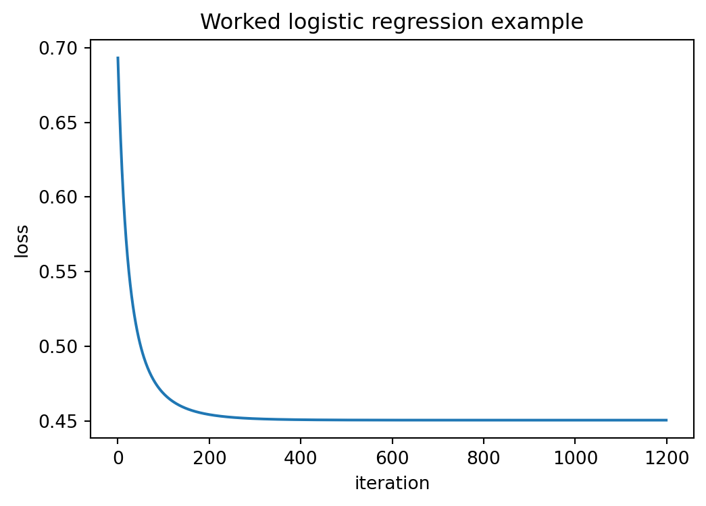
26 11. Data Preprocessing, Features, and Shapes
26.1 11.1 Why preprocessing matters
A model is not only determined by its optimization method. The representation of the data matters.
Common preprocessing tasks include:
- selecting relevant columns;
- handling missing values;
- encoding categorical information;
- centering and scaling;
- constructing interaction features;
- splitting data into training and testing sets.
26.2 11.2 Reshape, flatten, and new axes
x = np.arange(12)
X = x.reshape(3, 4)
print("x =", x)
print("X =")
print(X)
print("x.shape =", x.shape)
print("X.shape =", X.shape)
print("flatten =", X.flatten())
print("ravel =", X.ravel())
print("x[:, None].shape =", np.array([1, 2, 3])[:, None].shape)x = [ 0 1 2 3 4 5 6 7 8 9 10 11]
X =
[[ 0 1 2 3]
[ 4 5 6 7]
[ 8 9 10 11]]
x.shape = (12,)
X.shape = (3, 4)
flatten = [ 0 1 2 3 4 5 6 7 8 9 10 11]
ravel = [ 0 1 2 3 4 5 6 7 8 9 10 11]
x[:, None].shape = (3, 1)26.3 11.3 Feature scaling
rng = np.random.default_rng(9)
X = np.column_stack([
rng.normal(0, 1, size=200),
rng.normal(1000, 250, size=200),
rng.normal(0.01, 0.003, size=200)
])
mu = np.mean(X, axis=0)
sigma = np.std(X, axis=0)
Z = (X - mu) / sigma
print("original feature scales:")
print(np.std(X, axis=0))
print("scaled feature scales:")
print(np.std(Z, axis=0))original feature scales:
[1.02119562e+00 2.42888357e+02 3.16507367e-03]
scaled feature scales:
[1. 1. 1.]Scaling is often crucial for gradient-based optimization because poorly scaled features can slow convergence.
26.4 11.4 Train-test split using pandas
df = df_csv.copy()
numeric_cols = [c for c in df.columns if pd.api.types.is_numeric_dtype(df[c])]
target_col = "target" if "target" in df.columns else numeric_cols[-1]
feature_cols = [c for c in numeric_cols if c != target_col]
df_model = df[feature_cols + [target_col]].dropna()
X = df_model[feature_cols].to_numpy(dtype=float)
y = df_model[target_col].to_numpy(dtype=float)
rng = np.random.default_rng(123)
perm = rng.permutation(len(X))
split = int(0.8 * len(X))
X_train = X[perm[:split]]
X_test = X[perm[split:]]
y_train = y[perm[:split]]
y_test = y[perm[split:]]
print("feature columns =", feature_cols)
print("X_train.shape =", X_train.shape)
print("X_test.shape =", X_test.shape)feature columns = ['age', 'income', 'hours_studied']
X_train.shape = (96, 3)
X_test.shape = (24, 3)26.5 11.5 Polynomial features in one variable
A linear model becomes nonlinear in the original input if we augment the feature map.
For one variable \(x\), define
\[ \phi(x) = (1, x, x^2, x^3). \]
Then the model
\[ \hat y = w_0 + w_1 x + w_2 x^2 + w_3 x^3 \]
is still linear in the parameter vector \(w\).
x = np.linspace(-2, 2, 100)
Phi = np.column_stack([np.ones_like(x), x, x**2, x**3])
print("Phi.shape =", Phi.shape)
print(Phi[:5])Phi.shape = (100, 4)
[[ 1. -2. 4. -8. ]
[ 1. -1.95959596 3.84001632 -7.52488047]
[ 1. -1.91919192 3.68329762 -7.06895503]
[ 1. -1.87878788 3.52984389 -6.63182792]
[ 1. -1.83838384 3.37965514 -6.21310338]]26.6 11.6 A polynomial regression example
rng = np.random.default_rng(0)
x = np.linspace(-2, 2, 150)
y_true = 1 - x + 2 * x**2 - 0.5 * x**3
y = y_true + 0.8 * rng.standard_normal(len(x))
Phi = np.column_stack([np.ones_like(x), x, x**2, x**3])
w = np.linalg.solve(Phi.T @ Phi, Phi.T @ y)
y_pred = Phi @ w
print("estimated coefficients =", w)
plt.figure(figsize=(6, 4))
plt.scatter(x, y, s=15, label="data")
plt.plot(x, y_true, label="true function")
plt.plot(x, y_pred, label="polynomial fit")
plt.legend()
plt.title("Polynomial regression")
plt.show()estimated coefficients = [ 1.11483741 -1.11943614 1.95232421 -0.45054691]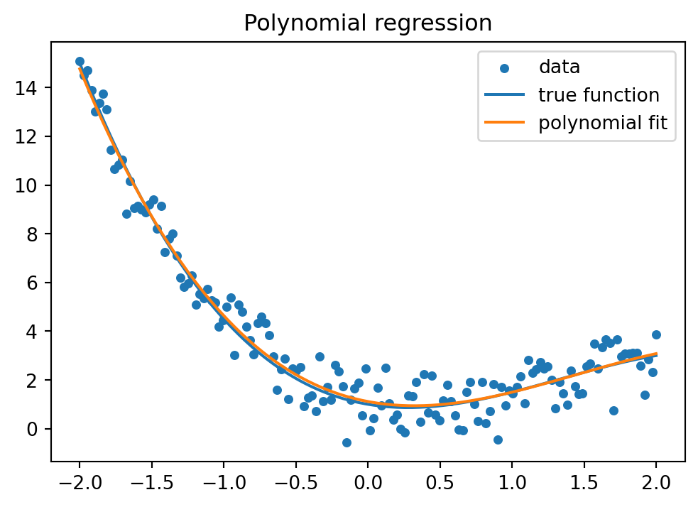
26.7 11.7 Exercises
- Explain the difference between
reshape,flatten, andravel. - Standardize a feature matrix and verify columnwise mean \(0\) and standard deviation \(1\).
- Build polynomial features up to degree \(3\) for a one-dimensional dataset.
- Split a dataset into train and test parts.
- Explain why feature engineering can make a linear model nonlinear in the original input.
26.8 11.8 Worked example
x = np.linspace(-1, 1, 8)
Phi = np.column_stack([np.ones_like(x), x, x**2])
print("Phi =")
print(Phi)
mu = np.mean(Phi[:, 1:], axis=0)
sigma = np.std(Phi[:, 1:], axis=0)
Phi_scaled = Phi.copy()
Phi_scaled[:, 1:] = (Phi_scaled[:, 1:] - mu) / sigma
print()
print("Phi_scaled =")
print(Phi_scaled)Phi =
[[ 1. -1. 1. ]
[ 1. -0.71428571 0.51020408]
[ 1. -0.42857143 0.18367347]
[ 1. -0.14285714 0.02040816]
[ 1. 0.14285714 0.02040816]
[ 1. 0.42857143 0.18367347]
[ 1. 0.71428571 0.51020408]
[ 1. 1. 1. ]]
Phi_scaled =
[[ 1. -1.52752523 1.52752523]
[ 1. -1.09108945 0.21821789]
[ 1. -0.65465367 -0.65465367]
[ 1. -0.21821789 -1.09108945]
[ 1. 0.21821789 -1.09108945]
[ 1. 0.65465367 -0.65465367]
[ 1. 1.09108945 0.21821789]
[ 1. 1.52752523 1.52752523]]27 12. Regularization and Overfitting
27.1 12.1 Motivation
When a model is too flexible relative to the amount of data, it may fit noise rather than structure. This phenomenon is called overfitting.
One way to control complexity is regularization.
27.2 12.2 Ridge regression
The ridge objective is
\[ f_\lambda(w) = \|Xw - y\|_2^2 + \lambda \|w\|_2^2 \]
for \(\lambda > 0\).
Differentiating gives
\[ \nabla f_\lambda(w) = 2X^\top(Xw - y) + 2\lambda w. \]
The normal equation becomes
\[ (X^\top X + \lambda I)w = X^\top y. \]
27.3 12.3 Ridge implementation
rng = np.random.default_rng(0)
n = 60
x = np.linspace(-3, 3, n)
y_true = np.sin(x)
y = y_true + 0.35 * rng.standard_normal(n)
degree = 12
Phi = np.column_stack([x**k for k in range(degree + 1)])
lam_values = [0.0, 1e-3, 1e-1, 1.0]
plt.figure(figsize=(7, 5))
plt.scatter(x, y, s=18, label="data")
for lam in lam_values:
A = Phi.T @ Phi + lam * np.eye(Phi.shape[1])
w = np.linalg.solve(A, Phi.T @ y)
y_pred = Phi @ w
plt.plot(x, y_pred, label=f"lambda={lam}")
plt.plot(x, y_true, label="true sin(x)", linewidth=2)
plt.legend()
plt.title("Ridge regularization on polynomial regression")
plt.show()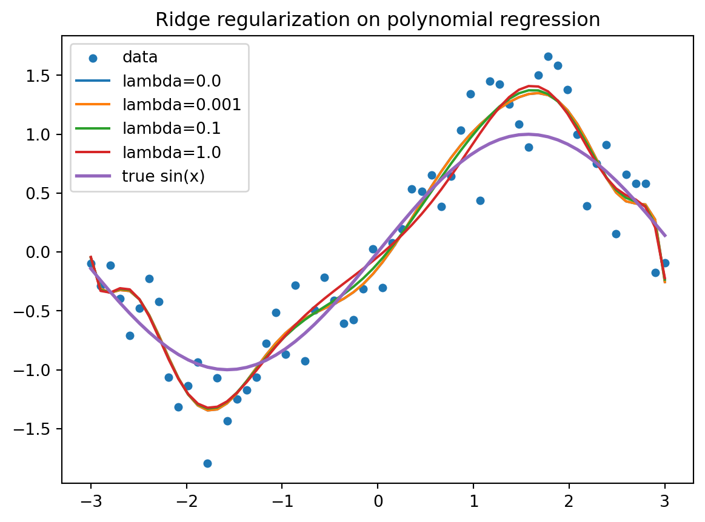
27.4 12.4 Train-test perspective
A model can have very small training error and much worse test error. That discrepancy is a practical sign of overfitting.
rng = np.random.default_rng(1)
perm = rng.permutation(n)
split = int(0.7 * n)
train_idx = perm[:split]
test_idx = perm[split:]
x_train = x[train_idx]
y_train = y[train_idx]
x_test = x[test_idx]
y_test = y[test_idx]
Phi_train = np.column_stack([x_train**k for k in range(degree + 1)])
Phi_test = np.column_stack([x_test**k for k in range(degree + 1)])
for lam in [0.0, 1e-3, 1e-2, 1e-1, 1.0]:
A = Phi_train.T @ Phi_train + lam * np.eye(Phi_train.shape[1])
w = np.linalg.solve(A, Phi_train.T @ y_train)
train_mse = np.mean((Phi_train @ w - y_train)**2)
test_mse = np.mean((Phi_test @ w - y_test)**2)
print(f"lambda={lam:>5}: train_mse={train_mse:.4f}, test_mse={test_mse:.4f}")lambda= 0.0: train_mse=0.0551, test_mse=0.1117
lambda=0.001: train_mse=0.0551, test_mse=0.1116
lambda= 0.01: train_mse=0.0551, test_mse=0.1113
lambda= 0.1: train_mse=0.0563, test_mse=0.1108
lambda= 1.0: train_mse=0.0613, test_mse=0.119827.5 12.5 Exercises
- Derive the ridge normal equation.
- Fit a high-degree polynomial with and without regularization.
- Compare train and test errors for different values of \(\lambda\).
- Explain why ridge can improve generalization.
- Discuss whether the intercept should always be regularized in practical applications.
27.6 12.6 Worked example
rng = np.random.default_rng(2)
x = np.linspace(-2, 2, 50)
y = np.cos(2 * x) + 0.2 * rng.normal(size=len(x))
Phi = np.column_stack([x**k for k in range(9)])
for lam in [0.0, 0.01, 0.1]:
w = np.linalg.solve(Phi.T @ Phi + lam * np.eye(Phi.shape[1]), Phi.T @ y)
print(f"lambda={lam}, coefficient norm={np.linalg.norm(w):.3f}")lambda=0.0, coefficient norm=2.505
lambda=0.01, coefficient norm=2.391
lambda=0.1, coefficient norm=1.83428 13. Mini-Batches and Stochastic Ideas
28.1 13.1 From full gradients to sampled gradients
For large datasets, computing the full gradient at every step can be expensive. Instead one can approximate it by sampling a subset of observations.
This leads to mini-batch gradient methods.
28.2 13.2 A simple batch sampler
rng = np.random.default_rng(0)
n = 500
d = 4
X = rng.normal(size=(n, d))
w_true = np.array([1.0, -2.0, 0.5, 1.5])
y = X @ w_true + 0.5 * rng.normal(size=n)
def sample_minibatch(X, y, batch_size, rng):
idx = rng.choice(len(X), size=batch_size, replace=False)
return X[idx], y[idx]
Xb, yb = sample_minibatch(X, y, batch_size=16, rng=rng)
print("Xb.shape =", Xb.shape)
print("yb.shape =", yb.shape)Xb.shape = (16, 4)
yb.shape = (16,)28.3 13.3 Mini-batch gradient descent for least squares
rng = np.random.default_rng(1)
w = np.zeros(d)
eta = 0.05
batch_size = 32
num_steps = 500
losses = []
for _ in range(num_steps):
Xb, yb = sample_minibatch(X, y, batch_size=batch_size, rng=rng)
grad = (2 / len(Xb)) * Xb.T @ (Xb @ w - yb)
w -= eta * grad
losses.append(np.mean((X @ w - y)**2))
print("estimated w =", w)
print("true w =", w_true)estimated w = [ 1.00794574 -2.02964886 0.51013668 1.5059959 ]
true w = [ 1. -2. 0.5 1.5]28.4 13.4 Comparison with full-batch gradient descent
w_full = np.zeros(d)
losses_full = []
for _ in range(num_steps):
grad_full = (2 / n) * X.T @ (X @ w_full - y)
w_full -= eta * grad_full
losses_full.append(np.mean((X @ w_full - y)**2))
plt.figure(figsize=(6, 4))
plt.plot(losses, label="mini-batch")
plt.plot(losses_full, label="full batch")
plt.legend()
plt.xlabel("iteration")
plt.ylabel("MSE on full data")
plt.title("Mini-batch versus full-batch gradient descent")
plt.show()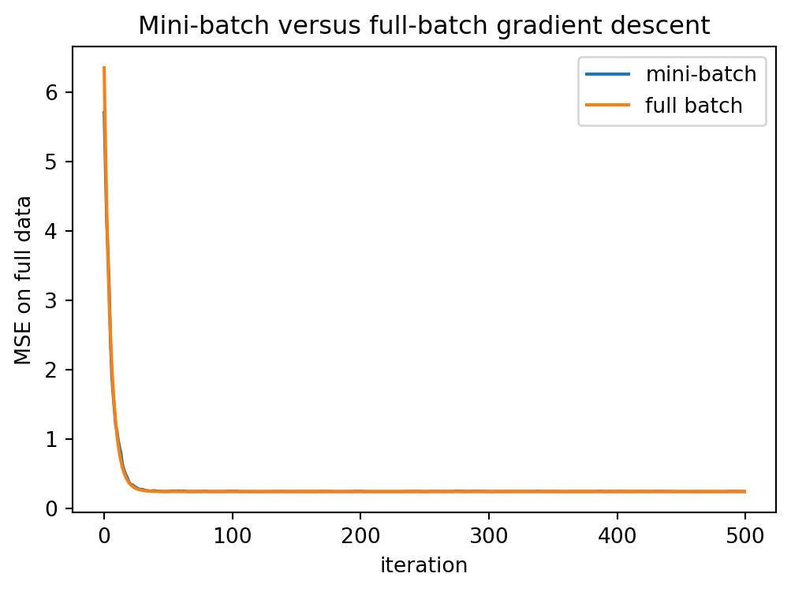
28.5 13.5 Exercises
- Implement a mini-batch sampler.
- Compare mini-batch and full-batch gradient descent on the same problem.
- Change the batch size and observe the effect on the loss curve.
- Explain why mini-batch methods introduce noise into the optimization path.
- Discuss why stochastic methods are attractive for large-scale machine learning.
28.6 13.6 Worked example
rng = np.random.default_rng(4)
n = 300
d = 2
X = rng.normal(size=(n, d))
w_true = np.array([2.5, -0.7])
y = X @ w_true + 0.3 * rng.normal(size=n)
def mbgd(X, y, batch_size, eta, steps, rng):
w = np.zeros(X.shape[1])
hist = []
for _ in range(steps):
idx = rng.choice(len(X), size=batch_size, replace=False)
Xb = X[idx]
yb = y[idx]
grad = (2 / batch_size) * Xb.T @ (Xb @ w - yb)
w -= eta * grad
hist.append(np.mean((X @ w - y)**2))
return w, hist
w_mb, hist_mb = mbgd(X, y, batch_size=24, eta=0.08, steps=250, rng=rng)
print("w_mb =", w_mb)w_mb = [ 2.52243211 -0.67183942]29 14. A First Neural Network in Pure NumPy
29.1 14.1 Why neural networks fit naturally into linear algebra
A fully connected neural network is built from repeated compositions of affine maps and nonlinear activation functions. This makes it an ideal topic after students are comfortable with matrices, broadcasting, and vectorization.
We consider a network with one hidden layer:
\[ H = \phi(XW_1 + b_1), \]
\[ \hat Y = HW_2 + b_2. \]
Here
- \(X \in \mathbb{R}^{n \times d}\) is the input matrix;
- \(W_1 \in \mathbb{R}^{d \times h}\) is the first weight matrix;
- \(b_1 \in \mathbb{R}^{h}\) is the hidden bias;
- \(H \in \mathbb{R}^{n \times h}\) is the hidden representation;
- \(W_2 \in \mathbb{R}^{h \times m}\) is the second weight matrix;
- \(b_2 \in \mathbb{R}^{m}\) is the output bias.
29.2 14.2 Activation functions
We begin with the ReLU function
\[ \mathrm{ReLU}(t) = \max(0, t). \]
def relu(x):
return np.maximum(0, x)
t = np.linspace(-3, 3, 400)
plt.figure(figsize=(6, 4))
plt.plot(t, relu(t))
plt.xlabel("t")
plt.ylabel("ReLU(t)")
plt.title("ReLU activation")
plt.show()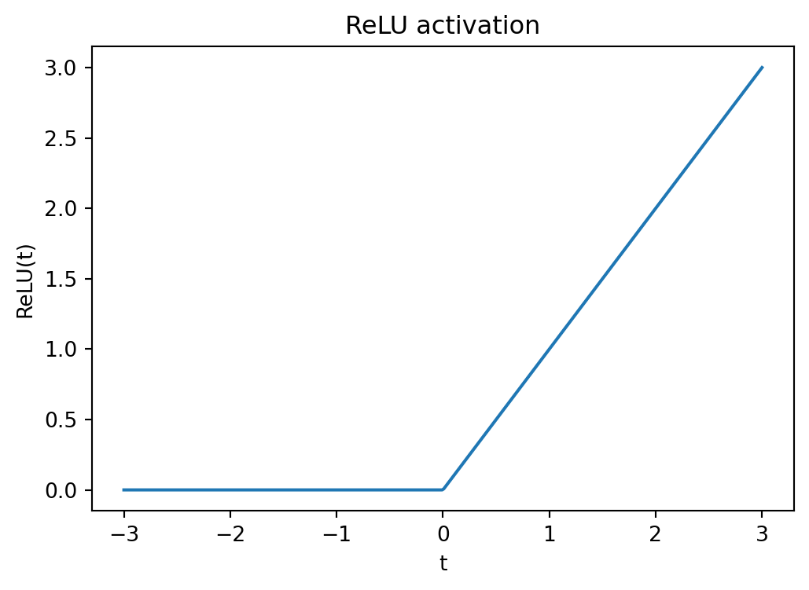
29.3 14.3 Forward pass on XOR-style data
rng = np.random.default_rng(0)
X = np.array([
[0.0, 0.0],
[0.0, 1.0],
[1.0, 0.0],
[1.0, 1.0]
])
y = np.array([[0.0], [1.0], [1.0], [0.0]])
d = 2
h = 4
m = 1
W1 = 0.5 * rng.standard_normal((d, h))
b1 = np.zeros(h)
W2 = 0.5 * rng.standard_normal((h, m))
b2 = np.zeros(m)
H = relu(X @ W1 + b1)
Y = H @ W2 + b2
print("H =")
print(H)
print()
print("Y =")
print(Y)H =
[[0. 0. 0. 0. ]
[0. 0.18079753 0.65200002 0.47354048]
[0.06286511 0. 0.32021133 0.05245006]
[0. 0.1147451 0.97221135 0.52599054]]
Y =
[[ 0. ]
[-0.30779526]
[-0.12082619]
[-0.36470917]]29.4 14.4 Sigmoid output for binary classification
def sigmoid(x):
return 1 / (1 + np.exp(-x))
P = sigmoid(Y)
print("P =")
print(P)P =
[[0.5 ]
[0.42365298]
[0.46983015]
[0.40982009]]29.5 14.5 Binary cross-entropy for network outputs
def bce_from_logits(logits, y_true):
probs = sigmoid(logits)
eps = 1e-12
probs = np.clip(probs, eps, 1 - eps)
return -np.mean(y_true * np.log(probs) + (1 - y_true) * np.log(1 - probs))29.6 14.6 Backpropagation outline
For a first course, it is often enough to outline the structure of backpropagation without deriving every formula in maximal detail.
Let
\[ Z_1 = XW_1 + b_1, \quad H = \mathrm{ReLU}(Z_1), \quad Z_2 = HW_2 + b_2, \quad P = \sigma(Z_2). \]
With binary cross-entropy and sigmoid output, the output error term is
\[ \delta_2 = P - y. \]
Then the parameter gradients are
\[ \nabla_{W_2} L = \frac{1}{n} H^\top \delta_2, \]
\[ \nabla_{b_2} L = \frac{1}{n} \sum_{i=1}^n \delta_{2,i}, \]
and for the hidden layer,
\[ \delta_1 = (\delta_2 W_2^\top) \odot \mathbf{1}_{Z_1 > 0}, \]
\[ \nabla_{W_1} L = \frac{1}{n} X^\top \delta_1, \qquad \nabla_{b_1} L = \frac{1}{n} \sum_{i=1}^n \delta_1^{(i)}. \]
29.7 14.7 Training the network
rng = np.random.default_rng(1)
X = np.array([
[0.0, 0.0],
[0.0, 1.0],
[1.0, 0.0],
[1.0, 1.0]
])
y = np.array([[0.0], [1.0], [1.0], [0.0]])
d = 2
h = 8
m = 1
W1 = 0.5 * rng.standard_normal((d, h))
b1 = np.zeros(h)
W2 = 0.5 * rng.standard_normal((h, m))
b2 = np.zeros(m)
eta = 0.5
history = []
for _ in range(5000):
Z1 = X @ W1 + b1
H = relu(Z1)
Z2 = H @ W2 + b2
P = sigmoid(Z2)
eps = 1e-12
P_clip = np.clip(P, eps, 1 - eps)
loss = -np.mean(y * np.log(P_clip) + (1 - y) * np.log(1 - P_clip))
history.append(loss)
delta2 = P - y
dW2 = H.T @ delta2 / len(X)
db2 = np.mean(delta2, axis=0)
delta1 = (delta2 @ W2.T) * (Z1 > 0)
dW1 = X.T @ delta1 / len(X)
db1 = np.mean(delta1, axis=0)
W2 -= eta * dW2
b2 -= eta * db2
W1 -= eta * dW1
b1 -= eta * db1
print("final probabilities =")
print(sigmoid(relu(X @ W1 + b1) @ W2 + b2))final probabilities =
[[3.78893539e-04]
[9.99833072e-01]
[9.99838096e-01]
[1.27758015e-04]]29.8 14.8 Training curve
plt.figure(figsize=(6, 4))
plt.plot(history)
plt.xlabel("iteration")
plt.ylabel("binary cross-entropy")
plt.title("Training a small neural network on XOR")
plt.show()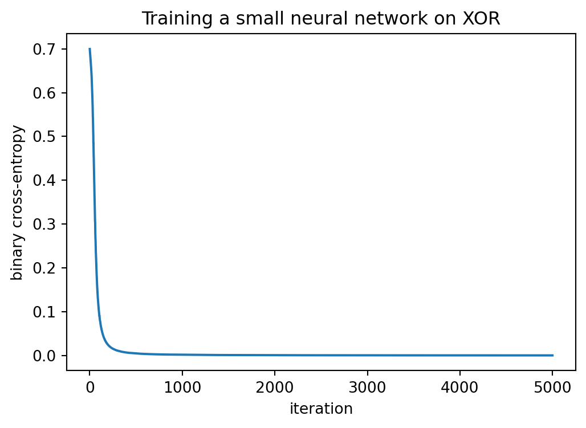
29.9 14.9 Exercises
- Verify all shapes in the forward pass and backward pass.
- Replace ReLU with sigmoid in the hidden layer and compare training behavior.
- Increase the hidden dimension and observe what changes.
- Explain why a linear model cannot solve XOR perfectly.
- Derive the gradient formulas for the final layer.
29.10 14.10 Worked example
rng = np.random.default_rng(3)
X = np.array([
[-1.0, -1.0],
[-1.0, 1.0],
[ 1.0, -1.0],
[ 1.0, 1.0]
])
y = np.array([[0.0], [1.0], [1.0], [0.0]])
W1 = 0.3 * rng.normal(size=(2, 6))
b1 = np.zeros(6)
W2 = 0.3 * rng.normal(size=(6, 1))
b2 = np.zeros(1)
for _ in range(3000):
Z1 = X @ W1 + b1
H = relu(Z1)
Z2 = H @ W2 + b2
P = sigmoid(Z2)
delta2 = P - y
dW2 = H.T @ delta2 / len(X)
db2 = np.mean(delta2, axis=0)
delta1 = (delta2 @ W2.T) * (Z1 > 0)
dW1 = X.T @ delta1 / len(X)
db1 = np.mean(delta1, axis=0)
W2 -= 0.4 * dW2
b2 -= 0.4 * db2
W1 -= 0.4 * dW1
b1 -= 0.4 * db1
print((sigmoid(relu(X @ W1 + b1) @ W2 + b2) > 0.5).astype(int))[[0]
[1]
[1]
[0]]30 15. Numerical Stability and Debugging
30.1 15.1 Why numerical stability matters
Even if a mathematical formula is correct, a direct implementation can fail because of floating-point limitations. In machine learning, common issues include:
- overflow in exponentials;
- underflow in probabilities;
- division by very small values;
- catastrophic cancellation;
- exploding or vanishing gradients;
- accidental shape mismatches.
30.2 15.2 Stable softmax
The naive softmax is
\[ \mathrm{softmax}(x)_i = \frac{e^{x_i}}{\sum_j e^{x_j}}. \]
This can overflow when the entries of \(x\) are large.
A standard remedy is to subtract the maximum entry first.
def softmax_naive(x):
ex = np.exp(x)
return ex / np.sum(ex)
def softmax_stable(x):
z = x - np.max(x)
ez = np.exp(z)
return ez / np.sum(ez)
x = np.array([1000.0, 1001.0, 1002.0])
print("stable softmax =", softmax_stable(x))stable softmax = [0.09003057 0.24472847 0.66524096]30.3 15.3 Stable logistic loss ideas
In practice, probabilities should often be clipped before taking logarithms.
p = np.array([1e-20, 0.2, 0.8, 1 - 1e-20])
p_clip = np.clip(p, 1e-12, 1 - 1e-12)
print("p =", p)
print("p_clip =", p_clip)
print("log(p_clip) =", np.log(p_clip))p = [1.e-20 2.e-01 8.e-01 1.e+00]
p_clip = [1.e-12 2.e-01 8.e-01 1.e+00]
log(p_clip) = [-2.76310211e+01 -1.60943791e+00 -2.23143551e-01 -9.99977878e-13]30.4 15.4 Shape debugging
When code fails, shapes are often the culprit. Printing shapes systematically is an underrated debugging method.
X = np.random.randn(5, 3)
w = np.random.randn(3)
b = 0.5
print("X.shape =", X.shape)
print("w.shape =", w.shape)
print("X @ w shape =", (X @ w).shape)
print("(X @ w + b).shape =", (X @ w + b).shape)X.shape = (5, 3)
w.shape = (3,)
X @ w shape = (5,)
(X @ w + b).shape = (5,)30.5 15.5 Gradient checking revisited
Finite differences are a practical way to validate a backpropagation implementation on small examples.
def f_scalar(w):
return np.sum(w**2)
def grad_scalar(w):
return 2 * w
w = np.array([1.5, -2.0, 0.3])
g = grad_scalar(w)
h = 1e-6
g_fd = np.zeros_like(w)
for j in range(len(w)):
e = np.zeros_like(w)
e[j] = 1.0
g_fd[j] = (f_scalar(w + h * e) - f_scalar(w - h * e)) / (2 * h)
print("analytic =", g)
print("finite difference =", g_fd)analytic = [ 3. -4. 0.6]
finite difference = [ 3. -4. 0.6]30.6 15.6 Common checklist
When a model behaves strangely, inspect the following.
- Are the shapes what you think they are?
- Are the dtypes appropriate?
- Are the gradients exploding or vanishing?
- Is the learning rate too large or too small?
- Are you mixing row vectors and column vectors?
- Are probabilities clipped before logarithms?
- Are features on wildly different scales?
30.7 15.7 Exercises
- Implement naive and stable softmax and compare them.
- Create a deliberate shape error and fix it.
- Run a finite-difference gradient test for a simple loss.
- Explain why clipping probabilities avoids undefined logarithms.
- Write your own debugging checklist for gradient-based optimization.
30.8 15.8 Worked example
x = np.array([500.0, 505.0, 510.0])
print("stable:", softmax_stable(x))
X = np.random.randn(7, 2)
w = np.random.randn(2, 1)
print("X.shape =", X.shape)
print("w.shape =", w.shape)
print("(X @ w).shape =", (X @ w).shape)stable: [4.50940412e-05 6.69254912e-03 9.93262357e-01]
X.shape = (7, 2)
w.shape = (2, 1)
(X @ w).shape = (7, 1)31 16. Capstone Mini-Projects
31.1 16.1 Project A: Linear regression on synthetic data
Tasks:
- Generate a dataset with two input features and a linear target.
- Fit the model using the normal equation.
- Fit the model using gradient descent.
- Compare the coefficient vectors.
- Study the effect of noise and scaling.
Starter code:
rng = np.random.default_rng(100)
n = 250
X = rng.normal(size=(n, 2))
w_true = np.array([3.0, -1.5])
y = X @ w_true + 0.4 * rng.normal(size=n)
w_closed = np.linalg.solve(X.T @ X, X.T @ y)
print("w_closed =", w_closed)w_closed = [ 2.96982269 -1.50309428]31.2 16.2 Project B: Logistic regression on a tabular dataset
Tasks:
- Load a CSV file with pandas.
- Select numeric features and a binary target.
- Handle missing values.
- Convert to NumPy.
- Train logistic regression.
- Evaluate accuracy on a test split.
Starter code:
df = df_csv.copy()
if "target" in df.columns:
feature_cols = [c for c in df.columns if c != "target" and pd.api.types.is_numeric_dtype(df[c])]
X = df[feature_cols].to_numpy(dtype=float)
y = df["target"].to_numpy(dtype=float)
mu = X.mean(axis=0)
sigma = X.std(axis=0)
X = (X - mu) / sigma
X = np.column_stack([np.ones(len(X)), X])
rng = np.random.default_rng(99)
perm = rng.permutation(len(X))
split = int(0.8 * len(X))
X_train = X[perm[:split]]
X_test = X[perm[split:]]
y_train = y[perm[:split]]
y_test = y[perm[split:]]
w = np.zeros(X.shape[1])
for _ in range(1500):
p = sigmoid(X_train @ w)
grad = X_train.T @ (p - y_train) / len(X_train)
w -= 0.1 * grad
test_probs = sigmoid(X_test @ w)
test_pred = (test_probs >= 0.5).astype(int)
print("test accuracy =", np.mean(test_pred == y_test))test accuracy = 0.458333333333333331.3 16.3 Project C: XOR with a neural network
Tasks:
- Implement the forward pass.
- Implement the backward pass.
- Train the network on XOR.
- Visualize the loss curve.
- Experiment with different hidden sizes and activations.
Starter code:
X = np.array([
[0.0, 0.0],
[0.0, 1.0],
[1.0, 0.0],
[1.0, 1.0]
])
y = np.array([[0.0], [1.0], [1.0], [0.0]])32 17. Summary and Outlook
32.1 17.1 Summary of the main ideas
The core message of this course is that machine learning can be understood very naturally through finite-dimensional linear algebra, calculus, and vectorized programming.
The main conceptual pillars were:
- arrays as concrete representations of vectors and matrices;
- slicing, masking, and broadcasting as tools for structured numerical work;
- matrix-vector products as the computational core of linear models;
- aggregation and statistics as the basis of losses and preprocessing;
- pandas as a labeled interface to tabular data;
- least squares as projection and optimization;
- logistic regression as a probability model with a convex loss;
- neural networks as compositions of affine maps and nonlinearities;
- numerical stability and shape awareness as practical necessities.
32.2 17.2 What students should now be able to do
A student who has worked through this script carefully should be able to:
- load, inspect, and preprocess numerical tabular data;
- represent machine learning models as matrix formulas;
- derive gradients of standard losses;
- implement linear regression and logistic regression from scratch;
- implement a small neural network in pure NumPy;
- debug shape mismatches and stability issues.
32.3 17.3 Natural continuations
Possible directions for a continuation course include:
- principal component analysis via singular value decomposition;
- stochastic gradient descent in greater depth;
- multiclass softmax regression;
- regularization paths and model selection;
- automatic differentiation;
- transition to PyTorch or JAX;
- optimization theory for machine learning;
- generalization bounds and statistical learning theory.
33 18. Suggested Homework Problems
- Prove carefully that the least-squares residual is orthogonal to the column space of \(X\).
- Derive the logistic regression gradient in full detail.
- Implement ridge regression and compare it to ordinary least squares on a polynomial task.
- Create a notebook that illustrates the effect of feature scaling on gradient descent.
- Build a two-layer network for XOR and verify the gradients numerically.
- Write a short essay explaining the role of broadcasting in machine learning code.
- Construct a dataset on which linear regression fails as a classifier and explain why logistic regression is better suited.
- Show by experiment that different random seeds can influence optimization trajectories even if the final model class is the same.
34 19. Appendix: Reusable Utility Functions
def add_intercept(X):
return np.column_stack([np.ones(len(X)), X])
def mse(y_true, y_pred):
return np.mean((y_true - y_pred)**2)
def mae(y_true, y_pred):
return np.mean(np.abs(y_true - y_pred))
def accuracy_score(y_true, y_pred):
return np.mean(y_true == y_pred)
def standardize_train_test(X_train, X_test):
mu = np.mean(X_train, axis=0)
sigma = np.std(X_train, axis=0)
sigma = np.where(sigma == 0, 1.0, sigma)
return (X_train - mu) / sigma, (X_test - mu) / sigma, mu, sigma
def least_squares_fit(X, y):
return np.linalg.solve(X.T @ X, X.T @ y)
def least_squares_predict(X, w):
return X @ w
def logistic_predict_proba(X, w):
return sigmoid(X @ w)
def logistic_predict(X, w, threshold=0.5):
return (logistic_predict_proba(X, w) >= threshold).astype(int)
def logistic_fit_gd(X, y, eta=0.1, num_steps=1000):
w = np.zeros(X.shape[1])
history = []
for _ in range(num_steps):
p = sigmoid(X @ w)
grad = X.T @ (p - y) / len(X)
w -= eta * grad
history.append(binary_cross_entropy(y, p))
return w, history34.1 19.1 Demonstration of the helper functions
rng = np.random.default_rng(123)
X = rng.normal(size=(80, 2))
w_true = np.array([1.5, -0.7])
y_reg = X @ w_true + 0.2 * rng.normal(size=80)
w_hat = least_squares_fit(X, y_reg)
print("least squares w_hat =", w_hat)
X_clf = add_intercept(X)
p_true = sigmoid(X_clf @ np.array([0.2, 1.0, -1.5]))
y_clf = (rng.random(80) < p_true).astype(float)
w_log, hist = logistic_fit_gd(X_clf, y_clf, eta=0.2, num_steps=800)
y_pred = logistic_predict(X_clf, w_log)
print("classification accuracy =", accuracy_score(y_clf, y_pred))least squares w_hat = [ 1.48542799 -0.66725832]
classification accuracy = 0.77535 20. Closing Remark
A useful way to summarize the philosophy of the course is this:
NumPy is not merely a programming library. It is a concrete language for expressing finite-dimensional mathematics.
Once students see machine learning through that lens, many formulas stop looking mysterious. They become structured matrix computations, optimization problems, and geometric projections. That is precisely the bridge this script was designed to build.—
36 Kursziele
Dieser Kurs richtet sich an Mathematiker:innen und verfolgt zwei Ziele:
- NumPy als Sprache der numerischen linearen Algebra verstehen.
- Grundideen des Machine Learning mathematisch sauber formulieren und direkt in NumPy implementieren.
Am Ende sollen die Teilnehmenden einfache Modelle nicht nur anwenden, sondern selbst herleiten und programmieren können.
37 Voraussetzungen
- Grundlagen in Analysis und Linearer Algebra
- elementare Python-Kenntnisse
- keine Vorkenntnisse in Machine Learning nötig
38 Lernziele
Nach dem Kurs sollen die Teilnehmenden:
- Arrays, Broadcasting und Vektorisierung sicher verwenden,
- lineare und logistische Regression in NumPy implementieren,
- Gradientenverfahren verstehen und numerisch umsetzen,
- einfache neuronale Netze in Matrixform formulieren,
- numerische Stabilität und Shape-Probleme erkennen.
39 1. NumPy als mathematische Sprache
39.1 1.1 Arrays als Vektoren und Matrizen
In NumPy werden Vektoren und Matrizen als Arrays dargestellt.
import numpy as np
x = np.array([1.0, 2.0, 3.0])
A = np.array([[1.0, 0.0, 2.0],
[0.0, 1.0, 1.0]])
print("x =", x)
print("A =\n", A)
print("shape von x:", x.shape)
print("shape von A:", A.shape)
print("Dimension von A:", A.ndim)x = [1. 2. 3.]
A =
[[1. 0. 2.]
[0. 1. 1.]]
shape von x: (3,)
shape von A: (2, 3)
Dimension von A: 239.2 1.2 Wichtige Grundbegriffe
shape: Form des Arraysndim: Anzahl der Achsendtype: Datentyp- Indexing und Slicing
- Views vs. Copies
B = np.arange(10)
print("B =", B)
print("B[2:6] =", B[2:6])
view = B[2:6]
view[0] = 99
print("Nach Änderung der View:")
print("view =", view)
print("B =", B)B = [0 1 2 3 4 5 6 7 8 9]
B[2:6] = [2 3 4 5]
Nach Änderung der View:
view = [99 3 4 5]
B = [ 0 1 99 3 4 5 6 7 8 9]
Important
Didaktischer Hinweis
Gerade für mathematisch orientierte Studierende ist der Unterschied zwischen View und Copy wichtig:
Nicht jede “Teilmenge” eines Arrays ist ein neues Objekt.
39.3 1.3 Normen und Skalarprodukt
x = np.array([1.0, -2.0, 2.0])
y = np.array([3.0, 1.0, -1.0])
l1 = np.sum(np.abs(x))
l2 = np.sqrt(np.sum(x**2))
dot = x @ y
print("||x||_1 =", l1)
print("||x||_2 =", l2)
print("<x,y> =", dot)||x||_1 = 5.0
||x||_2 = 3.0
<x,y> = -1.039.4 Übung 1
- Erzeuge einen Vektor \(x \in \mathbb{R}^5\).
- Berechne \(\|x\|_1\), \(\|x\|_2\) und \(\|x\|_\infty\).
- Implementiere das Skalarprodukt zweier Vektoren auf zwei Arten:
- mit
@ - mit
np.sum(x * y)
- mit
40 2. Vektorisierung und Broadcasting
40.1 2.1 Warum Vektorisierung?
In numerischer Mathematik und im Machine Learning vermeiden wir möglichst explizite Python-Schleifen.
x = np.linspace(0, 1, 5)
y = 3 * x + 2
print("x =", x)
print("y =", y)x = [0. 0.25 0.5 0.75 1. ]
y = [2. 2.75 3.5 4.25 5. ]40.2 2.2 Broadcasting
Broadcasting erlaubt Rechenoperationen zwischen Arrays unterschiedlicher, aber kompatibler Form.
X = np.array([[1.0, 2.0],
[3.0, 4.0],
[5.0, 6.0]])
b = np.array([10.0, 20.0])
print("X + b =\n", X + b)X + b =
[[11. 22.]
[13. 24.]
[15. 26.]]Interpretation: Der Vektor \(b\) wird zeilenweise “mitgeführt”.
40.3 2.3 Affine Abbildungen
Viele ML-Modelle beruhen auf der Form
\[ y = Xw + b. \]
X = np.array([[1.0, 2.0],
[0.0, 1.0],
[3.0, 1.0]])
w = np.array([2.0, -1.0])
b = 0.5
y = X @ w + b
print("y =", y)y = [ 0.5 -0.5 5.5]40.4 Übung 2
- Erzeuge eine Matrix \(X \in \mathbb{R}^{4 \times 3}\) und einen Vektor \(w \in \mathbb{R}^3\).
- Berechne \(Xw\).
- Addiere einen Bias-Term \(b\).
- Erkläre, warum Broadcasting hier funktioniert.
41 3. Lineare Algebra in NumPy
41.1 3.1 Matrix-Vektor- und Matrix-Matrix-Produkte
A = np.array([[1.0, 2.0],
[3.0, 4.0]])
x = np.array([1.0, -1.0])
B = np.array([[2.0, 0.0],
[1.0, 2.0]])
print("A @ x =", A @ x)
print("A @ B =\n", A @ B)A @ x = [-1. -1.]
A @ B =
[[ 4. 4.]
[10. 8.]]41.2 3.2 Transponieren
print("A^T =\n", A.T)A^T =
[[1. 3.]
[2. 4.]]41.3 3.3 Lineare Gleichungssysteme
Für \(Ax = b\) sollte man nicht mit der Inversen arbeiten, sondern mit np.linalg.solve.
A = np.array([[3.0, 1.0],
[1.0, 2.0]])
b = np.array([9.0, 8.0])
x = np.linalg.solve(A, b)
print("Lösung x =", x)
print("Prüfung A @ x =", A @ x)Lösung x = [2. 3.]
Prüfung A @ x = [9. 8.]41.4 3.4 Kondition und numerische Sensitivität
A = np.array([[1.0, 1.0],
[1.0, 1.0001]])
cond = np.linalg.cond(A)
print("Konditionszahl =", cond)Konditionszahl = 40002.00007491187
Note
Eine große Konditionszahl weist darauf hin, dass kleine Störungen in den Daten zu großen Änderungen in der Lösung führen können.
41.5 Übung 3
- Löse ein lineares Gleichungssystem mit
np.linalg.solve. - Vergleiche das Ergebnis mit einer Berechnung über
np.linalg.inv(A) @ b. - Berechne die Konditionszahl einer Matrix deiner Wahl.
42 4. Statistik mit NumPy
42.1 4.1 Mittelwert, Varianz, Standardabweichung
data = np.array([[1.0, 2.0, 3.0],
[2.0, 3.0, 4.0],
[3.0, 4.0, 5.0]])
print("Mittelwert insgesamt:", np.mean(data))
print("Mittelwerte spaltenweise:", np.mean(data, axis=0))
print("Varianzen spaltenweise:", np.var(data, axis=0))
print("Standardabweichungen spaltenweise:", np.std(data, axis=0))Mittelwert insgesamt: 3.0
Mittelwerte spaltenweise: [2. 3. 4.]
Varianzen spaltenweise: [0.66666667 0.66666667 0.66666667]
Standardabweichungen spaltenweise: [0.81649658 0.81649658 0.81649658]42.2 4.2 Bedeutung von axis
axis=0: spaltenweise Aggregationaxis=1: zeilenweise Aggregation
print("Zeilensummen:", np.sum(data, axis=1))
print("Spaltensummen:", np.sum(data, axis=0))Zeilensummen: [ 6. 9. 12.]
Spaltensummen: [ 6. 9. 12.]42.3 4.3 Standardisierung
Ein klassischer Vorverarbeitungsschritt ist die Standardisierung:
\[ \widetilde X = \frac{X - \mu}{\sigma}. \]
X = np.array([[1.0, 10.0],
[2.0, 20.0],
[3.0, 30.0],
[4.0, 40.0]])
mu = np.mean(X, axis=0)
sigma = np.std(X, axis=0)
X_std = (X - mu) / sigma
print("mu =", mu)
print("sigma =", sigma)
print("standardisierte Daten =\n", X_std)mu = [ 2.5 25. ]
sigma = [ 1.11803399 11.18033989]
standardisierte Daten =
[[-1.34164079 -1.34164079]
[-0.4472136 -0.4472136 ]
[ 0.4472136 0.4472136 ]
[ 1.34164079 1.34164079]]42.4 Übung 4
- Standardisiere einen kleinen Datensatz.
- Überprüfe numerisch, dass Mittelwert ungefähr 0 und Standardabweichung ungefähr 1 sind.
43 5. Zufall und Reproduzierbarkeit
43.1 5.1 Zufallszahlen
rng = np.random.default_rng(42)
print("Zufallsvektor:", rng.random(5))
print("Normalverteilte Daten:", rng.standard_normal(5))
print("Zufallsindizes:", rng.integers(0, 10, size=5))Zufallsvektor: [0.77395605 0.43887844 0.85859792 0.69736803 0.09417735]
Normalverteilte Daten: [-1.30217951 0.1278404 -0.31624259 -0.01680116 -0.85304393]
Zufallsindizes: [5 3 1 9 7]43.2 5.2 Reproduzierbarkeit
Für numerische Experimente im ML ist Reproduzierbarkeit zentral.
rng1 = np.random.default_rng(123)
rng2 = np.random.default_rng(123)
print(rng1.standard_normal(4))
print(rng2.standard_normal(4))[-0.98912135 -0.36778665 1.28792526 0.19397442]
[-0.98912135 -0.36778665 1.28792526 0.19397442]43.3 Übung 5
- Erzeuge einen zufälligen Datensatz mit 100 Punkten in \(\mathbb{R}^2\).
- Erzeuge dazu ein zufälliges Label-Array mit Werten 0 und 1.
- Teile die Daten in Trainings- und Testdaten auf.
44 Datenverarbeitung mit pandas
44.1 5.1 DataFrame als annotierte Matrix
import pandas as pd
df = pd.DataFrame({
"age": [25, 30, 22, 40],
"income": [50000, 60000, 45000, 80000],
"target": [0, 1, 0, 1]
})
print(df) age income target
0 25 50000 0
1 30 60000 1
2 22 45000 0
3 40 80000 1Interpretation: - Zeilen = Datenpunkte - Spalten = Features - entspricht einer Matrix \(X\) mit Zusatzstruktur
44.2 5.2 Auswahl und Projektion
print(df["age"])
print(df[["age", "income"]])
print(df.iloc[0])0 25
1 30
2 22
3 40
Name: age, dtype: int64
age income
0 25 50000
1 30 60000
2 22 45000
3 40 80000
age 25
income 50000
target 0
Name: 0, dtype: int6444.3 5.3 Filtern
df_filtered = df[df["age"] > 25]
print(df_filtered) age income target
1 30 60000 1
3 40 80000 144.4 5.4 Fehlende Werte
df.loc[2, "income"] = None
print(df.isna())
df_clean = df.dropna()
print(df_clean) age income target
0 False False False
1 False False False
2 False True False
3 False False False
age income target
0 25 50000.0 0
1 30 60000.0 1
3 40 80000.0 144.5 5.5 Übergang zu NumPy
X = df_clean[["age", "income"]].to_numpy()
y = df_clean["target"].to_numpy()
print("X =", X)
print("y =", y)X = [[2.5e+01 5.0e+04]
[3.0e+01 6.0e+04]
[4.0e+01 8.0e+04]]
y = [0 1 1]
Important
Ab diesem Punkt arbeiten wir wieder rein mathematisch mit NumPy.
44.6 Übung pandas
- Lade einen Datensatz (CSV).
- Entferne fehlende Werte.
- Wähle zwei Features und ein Target.
- Wandle alles in NumPy-Arrays um.
45 6. Lineare Regression
45.1 6.1 Problemstellung
Gegeben seien Daten \((x_i, y_i)\), gesucht ist ein lineares Modell
\[ \hat y = Xw. \]
Wir minimieren
\[ \min_w \|Xw - y\|_2^2. \]
45.2 6.2 Normalengleichung
Die erste Optimalitätsbedingung führt auf
\[ X^\top X w = X^\top y. \]
X = np.array([[1.0, 1.0],
[1.0, 2.0],
[1.0, 3.0],
[1.0, 4.0]])
y = np.array([2.0, 3.0, 5.0, 4.0])
w = np.linalg.solve(X.T @ X, X.T @ y)
print("Parameter w =", w)Parameter w = [1.5 0.8]45.3 6.3 Vorhersage und Fehler
y_pred = X @ w
mse = np.mean((y_pred - y)**2)
print("Vorhersagen =", y_pred)
print("MSE =", mse)Vorhersagen = [2.3 3.1 3.9 4.7]
MSE = 0.450000000000000245.4 6.4 Visualisierung
import matplotlib.pyplot as plt
x_plot = X[:, 1]
plt.figure(figsize=(6, 4))
plt.scatter(x_plot, y, label="Daten")
plt.plot(x_plot, y_pred, label="Regression")
plt.xlabel("x")
plt.ylabel("y")
plt.legend()
plt.show()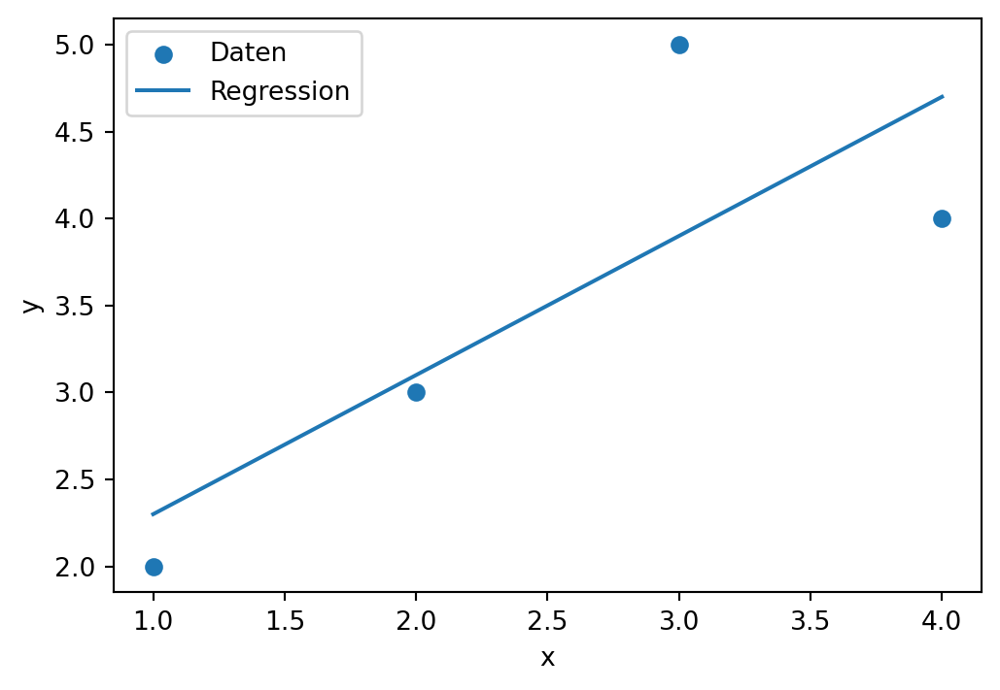
45.5 Übung 6
- Implementiere lineare Regression über die Normalengleichung.
- Füge Rauschen zu den Daten hinzu.
- Untersuche, wie sich die Lösung verändert.
46 7. Gradientenverfahren
46.1 7.1 Gradient der quadratischen Verlustfunktion
Für
\[ f(w) = \frac{1}{n}\|Xw - y\|_2^2 \]
gilt
\[ \nabla f(w) = \frac{2}{n} X^\top (Xw - y). \]
46.2 7.2 Gradient Descent
X = np.array([[1.0, 1.0],
[1.0, 2.0],
[1.0, 3.0],
[1.0, 4.0]])
y = np.array([2.0, 3.0, 5.0, 4.0])
n, d = X.shape
w = np.zeros(d)
eta = 0.1
loss_history = []
for k in range(200):
grad = (2 / n) * X.T @ (X @ w - y)
w = w - eta * grad
loss = np.mean((X @ w - y)**2)
loss_history.append(loss)
print("Gefundene Parameter:", w)
print("Letzter Loss:", loss_history[-1])Gefundene Parameter: [1.49747983 0.80085716]
Letzter Loss: 0.4500010607370208446.3 7.3 Konvergenz visualisieren
plt.figure(figsize=(6, 4))
plt.plot(loss_history)
plt.xlabel("Iteration")
plt.ylabel("MSE")
plt.title("Konvergenz des Gradient Descent")
plt.show()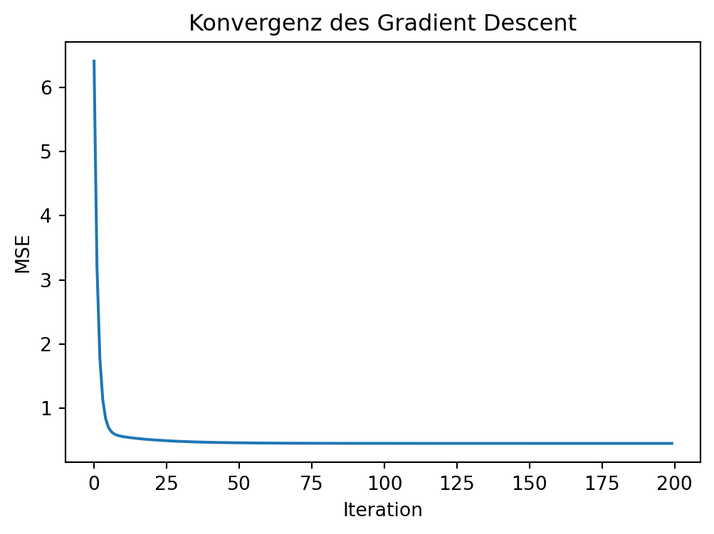
46.4 Übung 7
- Experimentiere mit verschiedenen Lernraten
eta. - Beobachte Konvergenz, langsames Lernen und Divergenz.
- Vergleiche die GD-Lösung mit der Lösung aus der Normalengleichung.
47 8. Logistische Regression
47.1 8.1 Binäre Klassifikation
Wir modellieren Wahrscheinlichkeiten mit der Sigmoid-Funktion
\[ \sigma(t) = \frac{1}{1 + e^{-t}}. \]
def sigmoid(t):
return 1 / (1 + np.exp(-t))
t = np.linspace(-5, 5, 100)
plt.figure(figsize=(6, 4))
plt.plot(t, sigmoid(t))
plt.xlabel("t")
plt.ylabel("sigma(t)")
plt.title("Sigmoid-Funktion")
plt.show()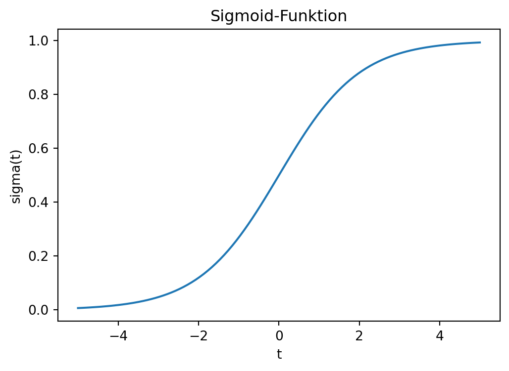
47.2 8.2 Modell
Für Datenmatrix \(X\) und Parameter \(w\) gilt
\[ p(y=1 \mid x) = \sigma(Xw). \]
47.3 8.3 Binary Cross Entropy
Die Verlustfunktion ist
\[ L(w) = -\frac{1}{n}\sum_{i=1}^n \left(y_i \log p_i + (1-y_i)\log(1-p_i)\right). \]
def binary_cross_entropy(y_true, y_prob):
eps = 1e-12
y_prob = np.clip(y_prob, eps, 1 - eps)
return -np.mean(y_true * np.log(y_prob) + (1 - y_true) * np.log(1 - y_prob))47.4 8.4 Training per Gradient Descent
X_raw = np.array([[0.0, 0.0],
[0.0, 1.0],
[1.0, 0.0],
[1.0, 1.0],
[1.5, 1.0],
[2.0, 1.0]])
y = np.array([0, 0, 0, 1, 1, 1], dtype=float)
X = np.column_stack([np.ones(len(X_raw)), X_raw])
n, d = X.shape
w = np.zeros(d)
eta = 0.5
history = []
for _ in range(1000):
p = sigmoid(X @ w)
grad = (X.T @ (p - y)) / n
w -= eta * grad
history.append(binary_cross_entropy(y, p))
print("w =", w)
print("finaler Loss =", history[-1])w = [-8.43141241 5.56359354 5.49551652]
finaler Loss = 0.0303107898543945347.5 8.5 Vorhersagen
p = sigmoid(X @ w)
y_pred = (p >= 0.5).astype(int)
print("Wahrscheinlichkeiten:", p)
print("Vorhergesagte Klassen:", y_pred)
print("Trefferquote:", np.mean(y_pred == y))Wahrscheinlichkeiten: [2.17866013e-04 5.04073600e-02 5.37675122e-02 9.32623019e-01
9.95546025e-01 9.99723021e-01]
Vorhergesagte Klassen: [0 0 0 1 1 1]
Trefferquote: 1.047.6 Übung 8
- Implementiere logistische Regression selbst.
- Variiere die Lernrate und die Anzahl der Iterationen.
- Ersetze die Trainingsdaten durch einen eigenen 2D-Datensatz.
48 9. Shapes, Masking und Datenvorverarbeitung
48.1 9.1 Reshape
x = np.arange(12)
X = x.reshape(3, 4)
print("x =", x)
print("X =\n", X)x = [ 0 1 2 3 4 5 6 7 8 9 10 11]
X =
[[ 0 1 2 3]
[ 4 5 6 7]
[ 8 9 10 11]]48.2 9.2 Neue Achsen
x = np.array([1.0, 2.0, 3.0])
print("x.shape =", x.shape)
print("x[:, None].shape =", x[:, None].shape)
print("x[None, :].shape =", x[None, :].shape)x.shape = (3,)
x[:, None].shape = (3, 1)
x[None, :].shape = (1, 3)48.3 9.3 Boolean Masking
X = np.array([[1.0, 10.0],
[-1.0, 20.0],
[2.0, 30.0],
[-2.0, 40.0]])
mask = X[:, 0] > 0
print("Maske:", mask)
print("Gefilterte Daten =\n", X[mask])Maske: [ True False True False]
Gefilterte Daten =
[[ 1. 10.]
[ 2. 30.]]48.4 Übung 9
- Erzeuge einen Datensatz mit positiven und negativen Werten.
- Filtere alle Zeilen heraus, deren erste Komponente negativ ist.
- Erläutere die Rolle von Masking im Preprocessing.
49 10. Einfaches neuronales Netz
49.1 10.1 Modellidee
Ein einfaches Netzwerk mit einer versteckten Schicht kann als
\[ f(x) = W_2 \,\phi(XW_1 + b_1) + b_2 \]
geschrieben werden.
Wir verwenden als Aktivierungsfunktion die ReLU
\[ \mathrm{ReLU}(t) = \max(0,t). \]
49.2 10.2 Forward Pass
def relu(x):
return np.maximum(0, x)
rng = np.random.default_rng(0)
X = np.array([[0.0, 0.0],
[0.0, 1.0],
[1.0, 0.0],
[1.0, 1.0]])
W1 = rng.standard_normal((2, 4))
b1 = np.zeros(4)
W2 = rng.standard_normal((4, 1))
b2 = np.zeros(1)
H = relu(X @ W1 + b1)
Y = H @ W2 + b2
print("Hidden layer H =\n", H)
print("Output Y =\n", Y)Hidden layer H =
[[0. 0. 0. 0. ]
[0. 0.36159505 1.30400005 0.94708096]
[0.12573022 0. 0.64042265 0.10490012]
[0. 0.22949019 1.9444227 1.05198108]]
Output Y =
[[ 0. ]
[-1.23118103]
[-0.48330477]
[-1.45883668]]49.3 10.3 Bemerkung zur Backpropagation
Für einen vollständigen Kurs sollte hier die Kettenregel in Matrixform entwickelt werden.
In einer ersten Einführung genügt oft:
- Vorwärtsdurchlauf definieren,
- Verlustfunktion formulieren,
- Gradienten der einzelnen Parameter herleiten,
- Update-Regel implementieren.
Tip
Gerade für Mathematiker:innen lohnt es sich, Backpropagation als wiederholte Anwendung der Kettenregel auf affine Abbildungen und nichtlineare Aktivierungen zu präsentieren.
49.4 Übung 10
- Implementiere ein kleines neuronales Netz mit einer versteckten Schicht.
- Verwende ReLU als Aktivierung.
- Erzeuge einen kleinen künstlichen Datensatz und berechne den Forward Pass.
50 11. Numerische Stabilität
50.1 11.1 Problem: Overflow bei exp
x = np.array([1000.0, 1001.0, 1002.0])Die naive Softmax-Implementierung
\[ \mathrm{softmax}(x_i) = \frac{e^{x_i}}{\sum_j e^{x_j}} \]
kann numerisch instabil sein.
50.2 11.2 Stabile Softmax
def softmax_stable(x):
z = x - np.max(x)
exp_z = np.exp(z)
return exp_z / np.sum(exp_z)
print("stabile Softmax:", softmax_stable(x))stabile Softmax: [0.09003057 0.24472847 0.66524096]50.3 Übung 11
- Implementiere eine naive Softmax.
- Vergleiche sie mit der stabilen Version.
- Diskutiere das Problem des Overflows.
51 12. Mini-Projekte
51.1 Projekt A: Lineare Regression
- Simuliere Daten
- fitte ein Modell
- interpretiere die Parameter
- visualisiere Residuen
51.2 Projekt B: Logistische Regression
- konstruiere einen binären Datensatz
- trainiere ein Modell
- berechne Accuracy und Loss
51.3 Projekt C: NumPy-only Neuronales Netz
- ein Hidden Layer
- ReLU oder Sigmoid
- Training mit Gradient Descent
- Diskussion von Overfitting und Lernrate
52 13. Zusammenfassung
Die zentralen NumPy-Ideen für Machine Learning sind:
- Arrays als Träger mathematischer Objekte
- Vektorisierung statt Schleifen
- Matrixrechnung für Modelle
- statistische Aggregation für Datenanalyse
- Gradientenverfahren für Optimierung
- Shape-Kompetenz für sauberen Code
- numerische Stabilität für robuste Implementierungen
53 14. Weiterführende Themen
Für einen Anschlusskurs bieten sich an:
- Regularisierung (Ridge, Lasso)
- PCA mit SVD
- stochastischer Gradient Descent
- Mini-Batching
- automatische Differentiation
- Übergang zu PyTorch oder JAX
54 Hausaufgabenideen
- Implementiere lineare Regression mit und ohne Normalengleichung.
- Implementiere logistische Regression für einen selbst erzeugten Datensatz.
- Untersuche den Einfluss der Lernrate auf die Konvergenz.
- Erstelle eine stabile Softmax-Funktion.
- Dokumentiere typische Shape-Fehler und ihre Korrektur.
55 Literaturhinweise
- NumPy-Dokumentation
- G. Strang: Linear Algebra and Learning from Data
- Hastie, Tibshirani, Friedman: The Elements of Statistical Learning
- Goodfellow, Bengio, Courville: Deep Learning